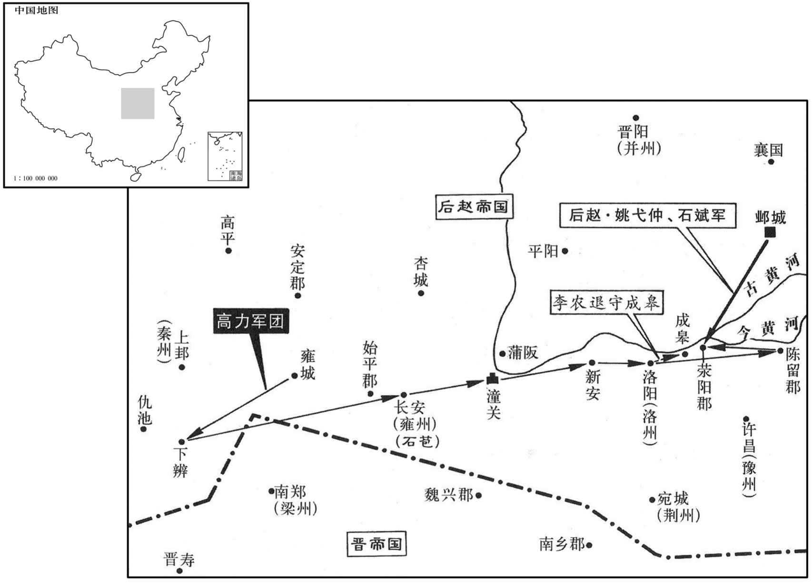
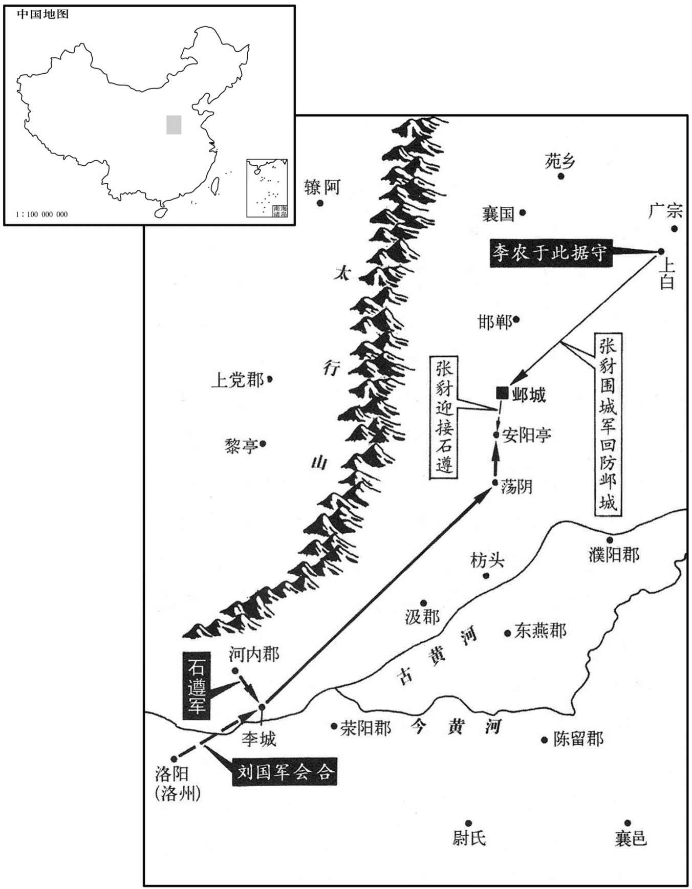
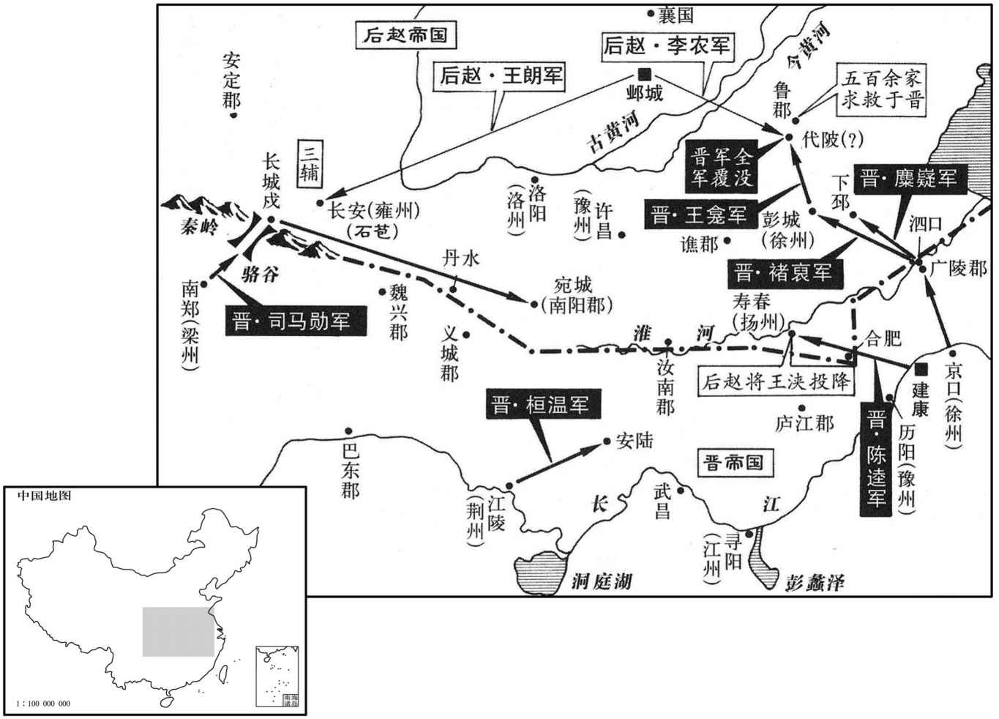
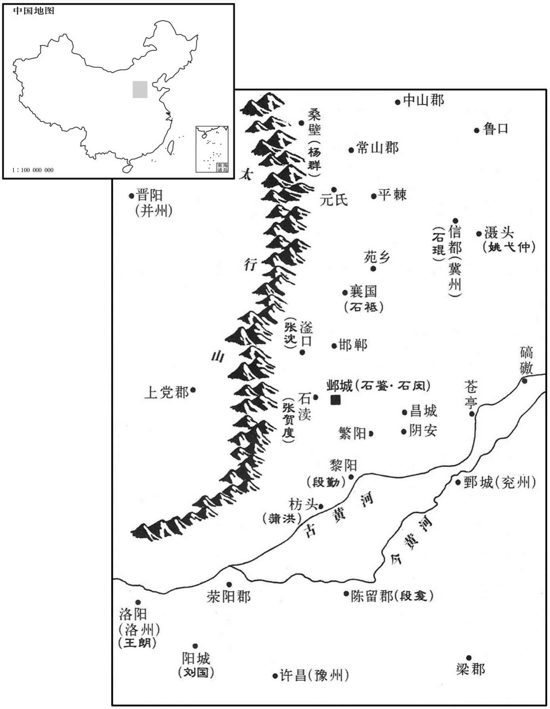
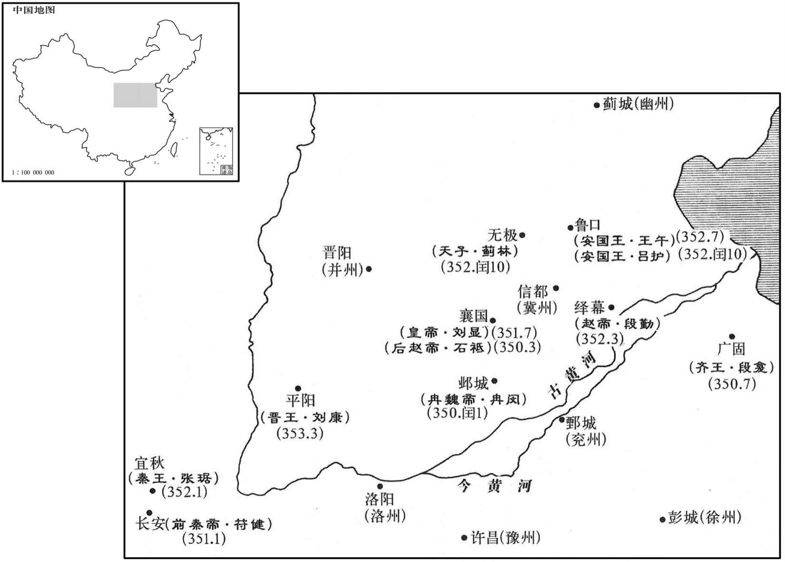
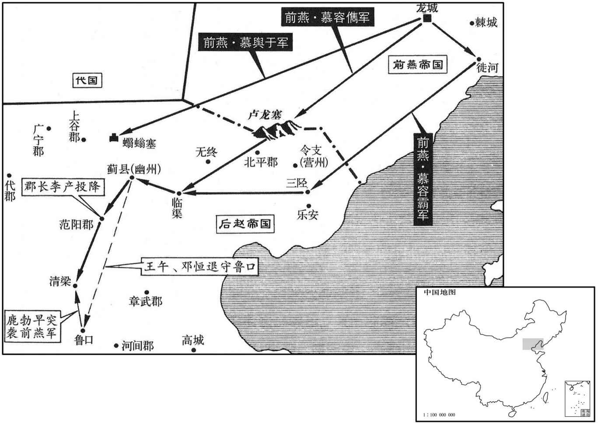
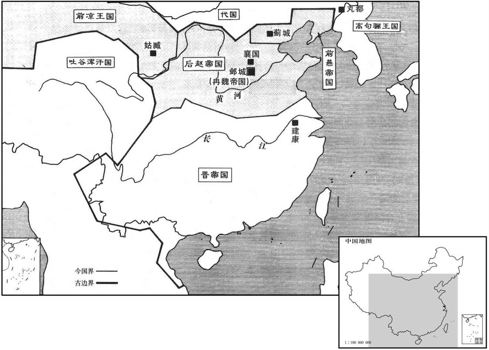
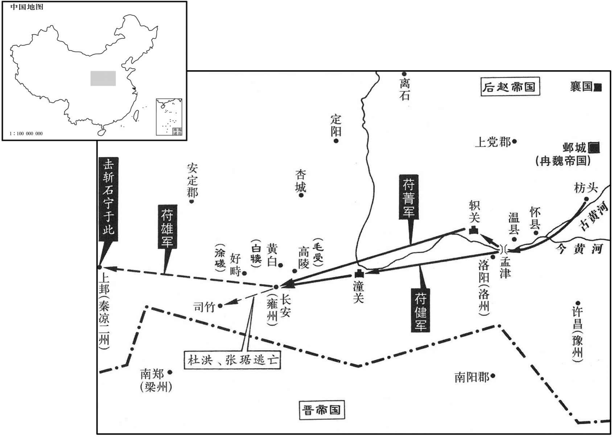

卷次与人物目录 / 卷98
资治通鉴 · 卷第九十八【晋纪二十】
公元348年至公元350年 · 原文、白话与胡三省注
本页按胡注本编排保存全卷内容。白话采用本站所据译本，未可靠对应的内容另列说明；事件标题用于定位，并非原书文字。
本卷共86段原文，86段有译文对应，0段缺译或待核对。
卷第九十八【晋纪二十】起著雍涒滩（戊申），尽上章淹茂（庚戌），凡三年。
卷首原文与注释
孝宗穆皇帝上之下
公元348年 · 晋孝宗穆皇帝永和四年
永和四年〔（戊申、三四八）〕
上传原文的注释括号有异常，字符原样保留；无法可靠划分的段落默认全文显示。
本年事件索引（现代整理）
夏，四月，林邑寇九真，〔既再破日南，故进寇九真。九真郡，唐爱州。〕杀士民什八九。
夏季，四月，林邑国的军队进犯九真郡，当地的士兵百姓十之八九被杀。
赵秦公韬有宠于赵王虎，欲立之，以太子宣长，〔长，知两翻。〕犹豫未决。宣尝忤旨，〔忤，五故翻。〕虎怒曰：「悔不立韬也！」韬由是益骄，造堂于太尉府，号曰宣光殿，梁长九丈。〔长，直亮翻。〕宣见之，大怒，斩匠，截梁而去；〔以犯其名也。〕韬怒，增之至十丈。宣闻之，谓所幸杨杯、〔【章：十二行本「杯」作「柸」；下同；乙十一行本同；孔本同。】〕牟成、赵生曰：「凶竖傲愎乃敢尔！〔愎，弼力翻。〕汝能杀之，吾入西宫，〔虎居西宫。〕当尽以韬之国邑分封汝等。韬死，主上必临丧，吾因行大事，蔑不济矣。」〔左传：潘崇谓楚商臣曰：「能行大事乎﹖」杜预注曰：大事，谓弒君。〕杯等许诺。
后赵秦公石韬受到后赵王石虎宠爱，石虎想立他为太子，可是因为已立太子石宣为长，犹豫不决。石宣曾违背后赵王的指令，石虎气愤地说：“真后悔当初没立石韬为太子！”石韬因此而更加傲慢无忌。他在太尉府建造了一座殿堂，命名为宣光殿，横梁长达九丈。石宣看到后认为冒犯了他的姓名，勃然大怒，便杀掉了工匠，截断了横梁，拂袖而去。石韬对此也怒不可遏，又把横梁加长到十丈。石宣听说后，对他的亲信杨杯、牟成、赵生说：“这小子竟敢如此傲慢刚愎！你们如果能把他杀掉，我即位入主西宫后，一定把他现在占据的封国郡邑全都分封给你们。石韬死后，主上一定会亲临哀悼，到时我趁机把他也杀掉，没有不能成功的。”杨杯等人同意了。
秋，八月，韬夜与僚属宴于东明观，〔水经注：石氏立东明观于邺东城上。〕因宿于佛精舍。〔佛精舍，佛寺也。僧徒专精修行之地，故谓之精舍。事物纪原曰：汉明帝于东都门外立精舍，以处摄摩腾、竺法兰。〕宣使杨杯等缘猕猴梯而入，〔梯小而长，人如猕猴攀缘而上，故曰猕猴梯。〕杀韬，置其刀箭而去。旦日，宣秦之，虎哀惊气绝，久之方苏。将出临其丧，司空李农谏曰：「害秦公者未知何人，贼在京师，銮舆不宜轻出。」虎乃止，严兵发哀于太武殿。宣往临韬丧，不哭，直言「呵呵」，〔呵，虎何翻。呵呵，笑声。〕使举衾观尸，大笑而去。〔大被曰衾。〕收大将军记室参军郑靖、尹武等，将委之以罪。
秋季，八月，石韬因为和他手下的同僚在东明观夜宴，就宿于佛精舍。石宣乘机派杨杯等人爬着梯子溜进佛精舍，杀死了石韬，扔下杀人刀箭潜逃而去。第二天，石宣禀报了石韬被杀的消息，石虎闻讯后悲惊交加，顿时昏厥过去，许久才苏醒过来。当他正要前往参加丧事活动时，司空李农劝他说：“杀害秦公石韬的人现在还不知道是谁，凶手尚在京师，国王的车乘不宜轻率出动。”石虎于是取消了亲临丧事的计划，命令士兵严加戒备，只在太武殿进行哀悼。石宣前往参加石韬的丧事活动，不仅不哭，还“呵呵”窃笑，又让人揭开覆盖尸体的被子观看尸体，然后大笑离去。他又把大将军记室参军郑清、尹武等人抓了起来，准备委罪于他们。
虎疑宣杀韬，欲召之，恐其不入，乃诈言其母杜后哀过危惙；〔惙，陟劣翻；类篇丑例翻，困劣也；言其气息惙然，慬相属也。〕宣不谓见疑，入朝十宫，因留之。〔朝，直遥翻。〕建兴人史科知其谋，告之；〔魏土地记曰：建兴郡治阳阿县；阳阿县，汉属上党郡。魏收志曰：慕容永分上党置建兴郡。则其地非石赵所置建兴郡也。水经注曰：田融言赵立建兴郡于广州城内，斯其是矣。〕虎使收杨杯、牟成，皆亡去；获赵生，诘之，具服。〔诘，去吉翻。〕虎悲怒弥甚，囚宣于席库，〔席库，藏席之所。〕以铁环穿其颔而谫之，取杀韬刀箭舐其血，哀号震动宫殿。〔谫，苏果翻。舐，直氏翻。号，户高翻。〕佛图澄曰：「宣、韬皆陛下之子，今为韬杀宣，是重祸也。〔为，于伪翻。〕陛下若加慈恕，福祚犹长；若必诛之，宣当为彗星下扫邺宫。」〔彗，祥岁翻，又旋芮翻，又徐醉翻。〕虎不从。积柴于邺北，树标其上，标末置鹿卢，穿之以绳，〔鹿卢即脳轳。〕倚梯柴积，送宣其下，使韬所幸宦者郝稚、刘霸拔其发，抽其舌，牵之登梯；郝稚以绳贯其颔，〔鹿卢绞上。〔上，时掌翻。〕刘霸断其手足，〔断，丁管翻。〕斫眼溃肠，如韬之伤。四面纵火，烟炎际天。〔炎，读曰焰。〕虎从昭仪已下数千人登中台以观之。〔中台者，三台之中台，即铜爵台也。〕火灭，取灰分置诸门交道中。〔交道，午道也；一纵一横为午道。〕杀其妻子九人。宣少子纔数岁，〔少，诗照翻。〕虎素爱之，抱之而泣，欲赦之，其大臣不听，就抱中取而杀之；兄挽虎衣大叫，至于绝带，虎因此发病。又废其后为庶人。诛其四率已下三百人，宦者五十人，皆车裂节解，弃之漳水。〔东宫有左、右、前、后四率。率，所律翻。支解者，解其四支；节解者，凡骨节节节解之也。〕洿其东宫以养猪牛。〔洿，汪乎翻。〕东宫卫士十余万人皆谪戍凉州。〔赵未得凉州，置凉州于金城，谪使戍凉州之边也。为下高力叛张本。〕先是〔【章：十二行本「是」下有「散骑常侍」四字；乙十一行本同；退斋校同；张校同，云无注本亦脱。】〕赵揽言于虎曰：「宫中将有变，宜备之。」及宣杀韬，虎疑其知而不告，亦诛之。〔史言赵揽谈天于猜暴之朝以自祸。先，悉荐翻。〕
两版字句有差异，建议核对原文。
石虎怀疑石宣杀害了石韬，想召见他，又怕他不来，于是便谎称他母亲杜后因悲哀过度而病危。石宣没有察觉已怀疑到了自己头上，入朝来到中宫，便被扣留了起来。建兴人史科知道石宣策划杀害石韬的计谋，告发了他们，石虎便派人去抓杨杯、牟成，但他们都逃跑了，只抓到了赵生。经过追问，他全部招供。石虎听完后更加悲痛愤怒，于是便把石宣囚禁在贮藏坐具的仓库中，用铁环穿透他的下巴颏并上了锁，拿来杀害石韬的刀箭让他舔上面的血，石宣的哀鸣嚎叫声震动宫殿。佛图澄对石虎说：“石宣、石韬都是陛下的儿子，今天如果为了石韬被杀而再杀了石宣，这便是祸上加祸了。陛下如果能对他施以仁慈宽恕，福祚的气运尚可延长；如果一定要杀了他，石宣当化为彗星而横扫邺宫。”石虎没有听从劝说。他命令在邺城之北堆上柴草，上面架设横杆，横杆的末端安置辘轳，绕上绳子，把梯子倚靠在柴堆上，将石宣押解到下边，又让石韬所宠爱的宦官郝稚、刘霸揪着石宣的头发，拽着石宣的舌头，拉他登上梯子；郝稚把绳索套在他的脖子上，用辘轳绞上去。刘霸砍断他的手脚，挖出他的眼睛，刺穿他的肠子，使他被伤害的程度和石韬一样。然后又在柴堆四周点火，浓烟烈焰冲天而起。石虎则跟随昭仪官以下数千人登上中台观看。火灭以后，又取来灰烬分别放在通向各个城门的十字大路当中。还杀掉了石宣的妻儿九人。石宣的小儿子刚刚几岁，石虎平素非常喜爱他，因此临杀前抱着他哭泣，意欲赦免，但手下的大臣们却不同意，从怀抱中要过来就给杀掉了。当时小孩拽着石虎的衣服大叫大闹，以至于连腰带都拽断了，石虎也因此得了大病。石虎还黜废了石宣的母后杜氏，贬其为庶人。又杀掉了石宣周围的三百人，宦官五十人，全都是车裂肢解以后，抛尸于漳水河中。石宣居住的太子东宫被改作饲养猪牛的地方。东宫卫士十多万人全都被贬谪戍卫凉州。谋杀石韬事发之前，赵揽曾对石虎说：“宫中将有变故，宜加防备。”等到石宣谋杀石韬以后，石虎怀疑他早知此事而不禀告，把他也杀了。
朝廷论平蜀之功，欲以豫章郡封桓温。尚书左丞荀蕤曰：「温若复平河、洛，〔复，扶又翻。〕将何以赏之﹖」乃加温征西大将军、开府仪同三司，封临贺郡公；加谯王无忌前将军；袁乔龙骧将军，封湘西伯。〔骧，思将翻。〕蕤，崧之子也。〔荀崧，荀藩之弟，永嘉之祸，相与建行台于密；建兴之初，又尝镇宛。〕
东晋朝廷讨论平定蜀汉的功劳，想把豫章郡赐封给桓温。尚书左丞荀蕤说：“桓温如果再平定了黄河、洛水一带，那将用什么赏赐他呢？”于是朝廷让桓温担任征西大将军、开府仪同三司，封为临贺郡公，让谯王司马无忌担任前将军，让袁乔出任龙骧将军，并封为湘西伯。荀蕤是荀菘的儿子。
温既灭蜀，威名大振，朝廷惮之。会稽王昱以扬州刺史殷浩有盛名，朝野推服，引为心膂，与参综朝权，欲以抗温；由是与温寖相疑贰。〔为温废浩、胁制朝廷张本。朝，直遥翻。会，工外翻。〕
桓温平定了蜀地以后，权威日盛，名声大振，连朝廷对他也惧怕三分。会稽王司马昱认为扬州刺史殷浩素有盛名，朝野对他都很推崇佩服，便以他作为心腹骨干，让他参与总揽朝廷权力，想以此来和桓温抗衡。从此殷浩和桓温便逐渐开始互相猜忌，进而彼此产生了异心。
浩以征北长史荀羡、前江州刺史王羲之，夙有令名，擢羡为吴国内史，〔江左郡国，以吴为甲。〕羲之为护军将军，以为羽翼。羡，蕤之弟；羲之，导之从子也。〔从，才用翻。〕羲之以为内外协和，然后国家可安，劝浩〔【章：十二行本「浩」下有「及羡」二字；乙十一行本同；张校同，云无注本亦脱。】〕不宜与温构隙；浩不从。
殷浩认为征北长史荀羡和前任江州刺史王羲之历来名声不错，便提升荀羡为吴国内史，提升王羲之为护军将军，作为自己的辅佐。荀羡是荀蕤的弟弟，王羲之是王导的侄子。王羲之认为只有朝廷内外融洽团结、和谐相处，然后国家才能安定，于是就劝说殷浩不要和桓温制造隔阂，但殷浩却没有听从。
燕王皝有疾，召世子儁属之曰：〔属，之欲翻。〕「今中原未平，方资贤杰以经世务。恪智勇兼济，才堪任重，汝其委之，以成吾志！」又曰：「阳士秋士行高洁，忠干贞固，〔阳骛，字士秋。行，下孟翻。〕可托大事，汝善待之！」九月，丙申，薨。〔年五十二。〕
前燕王慕容身患疾病，他召来太子慕容俊嘱咐说：“如今中原尚未平定，正是需要依靠贤良杰出人士掌管朝政的时候。慕容恪智勇双全，才能出众，你应当委他以重任，以实现我入主中原的远大志向！”又说：阳鹜具有高尚的士大夫品行，忠诚不二，坚贞不屈，可以委托他掌管大事，一定要很好地对待他！”九月，丙申（十七日），前燕王慕容去世。
赵王虎议立太子；太尉张举曰：「燕公斌有武略，〔斌，音彬。〕彭城公遵有文德，惟陛下所择。」虎曰：「卿言正起吾意。」戎昭将军张豺曰：〔载记曰：虎置左右戎昭、曜武将军，位在左右卫上。〕「燕公母贱，又尝有过；〔谓欲杀张贺度也，事见九十六卷成帝咸康六年。〕彭城公母前以太子事废，〔遵与邃同母。郑氏废见九十五卷成帝咸和四年。〕张豺获前赵主曜幼女安定公主，有殊色，纳于虎，虎嬖之，〔嬖，卑义翻，又博计翻。〕生齐公世。豺以虎老病，欲立世为嗣，冀刘氏为太后，已得辅政，乃说虎曰：「陛下再立太子，其母皆出于倡贱，〔说，输芮翻。倡，音昌。〕故祸乱相寻；今宜择母贵子孝者立之。」虎曰：「卿勿言，吾知太子处矣。」虎再与群臣议于东堂，虎曰：「吾欲以纯灰三斛自涤其肠，何为专生恶子，年踰二十辄欲杀父！今世方十岁，比其二十，吾已老疾。」〔比，必寐翻。〕乃与张举、李农定议，令公卿上书请立世为太子。大司农曹莫不肯署名，虎使张豺问其故，莫顿首曰：「天下重器，不宜立少，〔少，诗照翻。〕故不敢署。」虎曰：「莫，忠臣也，然未达朕意；张举、李农知朕意矣，可令谕之。」遂立世为太子，以刘昭仪为后。〔虎父子相残，废长立少，天将假手于冉闵以夷其种类也。〕
后赵王石虎与群臣商议立太子。太尉张举说：“燕公石斌长于军事统治，彭城公石遵长于礼乐教化，只看陛下选择。”石虎说：“你的意见正合我意。”戎昭将军张豺则说：“燕公石斌，其母亲出身低贱，本人又曾经有过过错；彭城公石遵，其母亲以前因为太子石邃的事情被黜废，如今再立石遵为太子，我担心他对您不可能没有丝毫的忌恨，愿陛下慎重考虑！”当初，石虎攻克上的时候，张豺虏获了前赵主刘曜的小女儿安定公主，因姿色出众，被石虎纳为妾，并深得宠爱，生下了齐公石世。眼下张豺考虑到石虎年老有病，想立石世为继承人，希望刘氏为太后，这样自己便能得以辅佐朝政。基于这种考虑，张豺劝石虎说：“陛下以前两次立太子，他们的母亲全都出身低贱，所以才导致了朝廷祸乱不断。如今应该选择母贵子孝者立为太子了。”石虎回答：“你不必说了，我知道太子该是谁了。”此后，石虎又一次和群臣在东堂商议。石虎说：“我要用三斛纯净的灰洗涮我内脏的秽恶，否则为什么我专生凶恶无赖的儿子，年龄一过二十就要杀害他的父亲！如今石世年方十岁，等到他二十岁时，我已经老了！”于是便与张举、李农作出决定，命令公卿大臣们上书，请求立石世为太子。大司农曹莫不肯在上书上签名，石虎派张豺去询问原因，曹莫叩头拜首回答道：“治理天下这样的重任，不应该选择年少者，所以我不敢签名。”石虎说：“曹莫确实是忠臣，然而却没有领会朕的用意；张举、李农深知朕意，可以让他们去说明一下。”于是便确立石世为太子，以刘昭仪为后。
冬，十一月，甲辰，葬燕文明王；〔皝谥曰文明。〕世子儁即位，〔儁，字宣英，皝之第二子。〕赦境内；遣使诣建康告丧。〔使，疏吏翻。〕以弟交为左贤王，左长史阳骛为郎中令。
冬季，十一月，甲辰（二十六日），安葬前燕王慕容。太子慕容俊即位，境内实行大赦。慕容俊派遣使臣到建康向东晋朝廷报告了丧事。他还任命弟弟慕容交为左贤王，任命左长史阳鹜为郎中令。
十二月，以左光禄大夫、领司徒、录尚书事蔡谟为侍中、司徒。谟上疏固让，谓所亲曰：「我若为司徒，将为后代所哂，〔哂，式忍翻。〕义不敢拜也。」
十二月，东晋朝廷任命左光禄大夫、领司徒、录尚书事蔡谟为侍中、司徒。蔡谟上疏，执意推辞。他对周围比较亲近的人说：“如果我当了司徒，必将为后人所耻笑，所以按照道义我不敢接受任命。”
公元349年 · 晋孝宗穆皇帝永和五年
五年〔（己酉、三四九）〕
上传原文的注释括号有异常，字符原样保留；无法可靠划分的段落默认全文显示。
本年事件索引（现代整理）
- 晋穆帝实行大赦
- 后赵王石虎即皇帝位，实行大赦
- 梁犊起兵东归，击败后赵军
- 姚弋仲击灭梁犊叛乱
- 始平人马勖纠集兵卒，自称将军
- 益州刺史周抚、龙骧将军朱焘率兵攻范贲
- 东晋穆帝下诏书遣使者陈沈前往前燕
- 桓温攻林邑兵败
- 石虎病重托孤
- 刘太后与张豺谋除石斌
- 石遵从幽州来到邺城，传诏让他在朝堂接受任
- 石虎来到太武殿的西阁
- 刘太后矫诏任张豺总揽朝政
- 石虎病卒，石世即位
- 张豺谋诛李农，李农据上白
- 彭城王石遵行至河内时，听到了父亲病故的丧讯
- 石遵起兵入邺，杀张豺即位
- 李农前来归附谢罪，石遵让他官复原位
- 邺城内狂风拔树，雷电交加
- 石冲起兵讨石遵，兵败被杀
- 武兴公石闵论用人
- 慕容儁决定伐赵，整军进取中原
- 后赵主石虎被安葬在显原陵，上庙号为太祖
- 桓温听说后赵大乱，便出兵驻扎安陆
- 东晋朝野上下都认论民政
- 东晋援助鲁郡民失败，褚裒退守
- 后赵乐平王石苞谋划率领关右的兵众攻邺城
- 杨初袭击并攻破了后赵的西城
- 凉州拥立张重华为凉王
- 司马勋率兵出骆谷，克了后赵的长城戍
- 石闵与石遵争权，闵渐掌军权
- 石闵发动政变杀石遵及其家族
- 石鉴即位，实行大赦
- 蒲洪率秦雍流民归附，自称三秦王
- 褚裒因鲁郡败军惭愤病卒
- 石鉴夜袭石闵李农失败
- 新兴王石祗
- 石闵李农平定孙伏都等羯族叛乱
- 石闵屠杀邺城胡羯二十余万人
- 前燕王慕容俊遣使者到凉州，与张重华相约共同攻后赵
- 高句丽王钊遣送以前的东夷护军宋晃到达前燕
春，正月，辛未朔，大赦。
春季，正月，辛未朔（疑误）。晋穆帝实行大赦。
赵王虎即皇帝，〔虎以成帝咸康三年即天王位，今即皇帝位。〕大赦，改元太宁；诸子皆进爵为王。
后赵王石虎即皇帝位，实行大赦，改年号为太宁，并将儿子们的爵位全都晋升为王。
故东宫高力等万余人谪戍凉州，〔石宜简多力之士以卫东宫，号曰高力，署督将以领之。〕行达雍城，〔扶风雍县城也。雍，于用翻；下同。〕既不在赦例，又敕雍州刺史张茂送之，茂皆夺其马，使之步推鹿车，致粮戍所。〔推，吐雷翻。风俗通曰：鹿车窄小，裁容一鹿。〕高力督定阳梁犊〔定阳县，汉属上郡，晋省。后魏太安中置定阳郡；唐为延州临真县。〕因众心之怨，谋作乱东归，众闻之，皆踊抃大呼。〔踊，跳跃也。抃，拊手也。呼，火故翻。〕犊乃自称晋征东大将军，帅众攻拔下辨；〔辨，步苋翻。〕安西将军刘宁自安定击之，为犊所败。〔败，补迈翻。〕高力皆多力善射，一当十余人，虽无兵甲，掠民斧，施一丈柯，攻战若神，〔柯，斧柄也。〕所向崩溃；戍卒皆随之，攻陷郡县，杀长吏、二千石，〔长，知两翻。〕长驱而东，比至长安，〔比，必寐翻。〕众已十万。乐平王苞尽锐拒之，一战而败。犊遂东出潼关，进趣洛阳。〔趣，七喻翻。〕赵主虎以李农为大都督、行大将军事，统卫军将军张贺度等步骑十万讨之，战于新安，〔新安县，汉属弘农郡，自晋以后属河南郡。骑，奇寄翻；下同。〕农等大败；战于洛阳，又败，退壁成皋。
原来守卫石宣东宫号称“高力”的一万多人被贬戍凉州，此时已行至雍城，因为他们不在赦免的范围内，石虎又命令雍州刺史张茂继续遣送他们。张茂却乘机扣留了他们所有的马匹，让他们推着运粮的小车徒步前往凉州。高力督定阳人梁犊利用众人内心的怨恨，策划造反作乱，返回家园。众人听说后，全都跳跃欢呼。于是梁犊便自称晋朝征东大将军，率领众卫士攻克了下辨。安西将军刘宁率兵从安定出发攻打梁犊，却被梁犊打败。这些号称“高力”的卫士们全都身强力壮，善于射箭，一人足以抵挡十余人。他们虽然没有武器盔甲，但抢来老百姓的斧头，再安上一丈来长的斧柄，交战时用起来出神入化，所向披靡。卫士们跟随着梁犊，攻克郡县，杀掉郡守、县令等官吏，长驱直入，向东而来。等到抵达长安时，参加的人已达十万。乐平王石苞率领全部精锐士兵阻挡他们，但一交战就被打败。梁犊于是东出潼关，向洛阳进发。后赵国主石虎任命李农为大都督、行大将军事，统领卫军将军张贺度等人的步兵、骑兵十万人前来讨伐，在新安交战，李农等大败；在洛阳交战，又被打败，只好退至成皋，坚壁防守。

犊遂东掠荥阳、陈留诸郡，〔武帝泰始二年，分河南置荥阳郡。〕虎大惧，以燕王斌为大都督，督中外诸军事，统冠军大将军姚弋仲、车骑将军蒲洪等讨之。〔斌，音彬。冠，古玩翻。〕弋仲将其众八千余人至邺，〔自滠头至邺。将，即亮翻。〕求见虎。虎病，未之见，引入领军省，〔领军省，领军将军视事之所。〕赐以己所御食。弋仲怒，不食，曰：「主上召我来击贼，当面见授方略，我岂为食来邪！〔为，于伪翻；下羌为同。〕且主上不见我，我何以知其存亡邪﹖」虎力疾见之，弋仲让虎曰：「儿死，愁邪，何为而病﹖兜幼时不择善人教之，使至于为逆；既为逆而诛之，又何愁焉！且汝久病，所立儿幼，〔谓太子世也。〕汝若不愈，天下必乱，当先忧此，勿忧贼也！犊等穷困思归，相聚为盗，所过残暴，何所能至！老羌为汝一举了之！」〔了，决也。〕弋仲性狷直，人无贵贱皆汝之，虎亦不之责。〔狷，吉掾翻。以石虎之猜暴而能容姚弋仲之狷直者，以其当理而切于事情也；苟徒狷直而不切当，殆难以免矣。〕于坐授使持节、征〔【章：十二行本「征」上有「侍中」二字；乙十一行本同；退斋校同。】〕西大将军，赐以铠马。〔坐，徂卧翻。使，疏吏翻。铠，可亥翻。〕弋仲曰：「汝看老羌堪破贼否﹖」乃被铠跨马于庭中，〔被，皮义翻。〕因策马南驰，不辞而出。遂与斌等击犊于荥阳，大破之，斩犊首而还，讨其余党，尽灭之。虎命弋仲剑履上殿，入朝不趋，〔上，时掌翻。〕进封西平郡公。蒲洪为车〔【章：十二行本「车」上有「侍中」二字；乙十一行本同；退斋校同。】〕骑大将军、开府仪同三司、都督雍‧秦州诸军事、雍州刺史，〔雍，于用翻。〕进封略阳郡公。
梁犊于是继续东进，攻取荥阳、陈留等郡。石虎十分害怕，任命燕王石斌为大都督，掌管内外各种军事事务，统领冠军大将军姚弋仲、车骑将军蒲洪等人的部队前来讨伐。姚弋仲率领他的士兵八千多人来到了邺城，求见石虎。石虎正在患病，没有见他，而是派人把他带到领军省，用专供自己所吃的御食赏赐他。姚弋仲勃然大怒，不仅不吃，还说：“主上召唤我前来讨伐乱贼，理当向我面授计谋，难道我是为了吃一顿饭才来的吗！再说如果主上不见我，我怎么知道他现在是死是活呢？”石虎勉强支撑着病体会见了他。姚弋仲责怪石虎说：“儿子死了，很忧愁吧，要不然为什么病了呢？儿子小的时候你不选择好人教育他，这才使他长大后干出了叛逆之事；既然是因为干了叛逆之事才杀了他，又有什么可忧愁的呢？再说你已经病了很久，立为太子的儿子年龄幼小，如果你病情不见好转，天下必将大乱，这才是首先应该忧虑的，不必忧虑那些乱贼！梁犊等人因为穷困无路，思家心切才相聚成为强盗，他们在所经过的地方烧杀抢掠，能成什么事！老夫为你一举消灭他们！”姚弋仲性情耿直暴躁，对人不论贵贱高下都直呼为“你”，因此石虎也不责怪他，当即坐在座位上任命他为使持节、征西大将军，并赏赐给他铠甲、战马。姚弋仲说：“你看老夫能打败乱贼吗？”说着在庭院里就披挂盔甲，跨上战马，然后扬鞭策马，连告辞的话也没说便南驰而去。于是，姚弋仲和石斌等率部在荥阳攻打梁犊，大获全胜，斩掉梁犊的头颅返回。接着又讨伐其残余士卒，把他们也干净彻底地消灭了。石虎因此给予姚弋仲可以佩剑穿鞋上殿、允许他大步入朝晋见国君的特殊礼遇，并晋封他为西平郡公。任命蒲洪为车骑大将军、开府仪同三司、都督雍、秦州诸军事、雍州刺史，并晋封为略阳郡公。
始平人马勖聚兵，自称将军，〔杜佑曰：汉平陵，晋改为始平，有马嵬故城。〕赵乐平王苞讨灭之，诛三千余家。
始平人马勖纠集兵卒，自称将军。后赵乐平王石苞率兵讨伐消灭了他们，杀掉三千多家。
夏，四月，益州刺史周抚、龙骧将军朱焘击范贲，斩之，益州平。〔范贲乱始上卷三年。骧，始将翻。〕
夏季，四月，益州刺史周抚、龙骧将军朱焘率兵攻打范贲，将其斩杀，益州得以平定。
诏遣谒者陈沈如燕，〔沈，持林翻。〕拜慕容儁为使持节、侍中、大都督、督河北诸军事、幽‧平二州牧、〔使，疏吏翻。考异曰：儁载记云，「幽、冀、并、平四州牧。」今从帝纪。〕大将军、大单于、燕王。〔单，音蝉。〕
东晋穆帝下诏书派遣使者陈沈前往前燕，授予慕容俊使持节、侍中、大都督、督河北诸军事以及，幽、平二州牧、大将军、大单于、燕王等官职。
桓温遣督护滕畯帅交、广之兵击林邑王文于卢容，〔畯，祖峻翻。卢容县，自汉以来属日南郡，有卢容浦，去郡二百里。帅，读曰率。〕为文所败，〔败，补迈翻。〕退屯九真。
桓温派督护滕率领交、广二州的士兵在卢容攻击林邑王范文，反被范文打败，只好撤退驻扎在九真郡。
乙卯，赵王虎病甚，以彭城王遵为大将军，镇关右；燕王斌为丞相，录尚书事；张豺为镇卫大将军、领军将军、吏部尚书；〔刘聪置十六大将军，镇卫其一也。石虎置镇卫将军，在车骑将军上；今以张豺为镇卫大将军，崇其号也。领军将军则掌兵柄，吏部尚书则典选事，是文武二柄悉以付豺矣。〕并受遗诏辅政。
乙卯（初九），后赵国主石虎病情恶化，任命彭城王石遵为大将军，镇守关右；任命燕王石斌为丞相，总领尚书职事；任命张豺为镇卫大将军、领军将军、吏部尚书。他们还接受遗诏，辅佐朝政。
刘后恶斌辅政，恐不于太子，与张豺谋去之。〔恶，乌路翻。去，羌吕翻。〕斌时在襄国，遣使诈谓斌曰：「主上疾已渐愈、王须猎者，可少停也。」斌素好猎、嗜酒，〔少，诗沼翻。好，呼到翻。〕遂留猎，且纵酒。刘氏与豺因矫诏称斌无忠孝之心，免官归第，使豺弟雄帅龙腾五百人守之。〔此石虎幽石宏之故智也，张豺踵而用之，非虎教之邪！石斌亦庸人耳，君父疾笃，征之受遗辅政，就使虎疾少愈，亦当夜衣而行；乃酣酒纵猎，其无智识如此！就使得权，诸弟亦将紾其臂而夺之。张举谓有武略，妄矣！〕
刘皇后讨厌石斌辅佐朝政，怕这样对太子不利，因此和张豺一起谋划想除掉他。当时石斌在襄国，她派遣使者前往欺骗石斌说：“主上的病情已逐渐好转，您可以稍迟些再前来。”石斌历来喜好打猎喝酒，听到这消息后，便又开始打猎纵酒。刘氏和张豺于是就假传诏令，称石斌毫无忠孝之心，将他免官归家，派张豺的弟弟张雄率宫中的龙腾卫士五百人看守他。
乙丑，遵自幽州至邺，敕朝堂受拜，〔朝，直遥翻。〕配禁兵三万遣之，遵涕泣而去。是日，虎疾小瘳，问：「遵至未﹖」左右对曰：「去已久矣。」虎曰：「恨不见之！」
乙丑（十九日），石遵从幽州来到邺城，传诏让他在朝堂接受任命，给他配备了三万宫中的亲兵，便让他回去，石遵流着眼泪走了。这天，石虎的病情稍有好转，问道：“石遵来了没有？”左右的人回答说：“已经离开很久了。”石虎说：“真痛心没有见到他！”
虎临西合，〔太武殿之西合也。〕龙腾中郎二百余人列拜于前，虎问：「何求﹖」皆曰：「圣体不安，直令燕王入宿卫，典兵马，」或言：「乞以为皇太子。」虎曰：「燕王不在内邪﹖召以来！」左右言：「王酒病，不能入。」虎曰：「促持辇迎之，当付玺绶。」亦竟无行者。〔左右皆为刘后母子，故竟无行者。玺，斯氏翻。绶，音受。〕寻惛眩而入。〔惛，迷忘也。眩，见视乱也。〕张豺使张雄矫诏杀斌。〔杀斌欲以一众心，岂知已有从臾石遵入立者。〕
石虎来到太武殿的西阁，担任宫中护卫任务的龙腾中郎二百多人上前列队拜见。石虎问：“你们有什么请求？”众卫士回答说：“主上圣体欠安，应该让燕王石斌入宫主管警卫，典掌兵马。”有的人还说：“请求以他为皇太子。”石虎说：“燕王不在宫内吗？把他召来！”左右的人回答：“燕王因纵酒而病，不能入宫了。”石虎说：“赶快用我乘坐的车子把他接来，应当把玺印交给他。”但左右竟然始终无人行动。不一会儿，石虎因头昏目眩，只好回去了。张豺派张雄假传诏令杀掉了石斌。
戊辰，刘氏复矫诏以豺为太保、都督中外诸军，录尚书事，如霍光故事。〔复，扶又翻。〕侍中徐统叹曰：「乱将作矣，吾无为预之。」仰药而死。
戊辰（二十二日），刘氏再次假传诏令，任命张豺为太保、都督中外诸军，总管尚书职事，就像西汉霍光辅政专权一样。侍中徐统叹息道：“祸乱将要来临了，我不必参与它。”随即服毒自杀身亡。
己巳，虎卒，太子世即位，尊刘氏为皇太后。刘氏临朝称制，〔朝，直遥翻。〕以张豺为丞相；豺辞不受，请以彭城王遵、义阳王鉴为左右丞相，以慰其心，刘氏从之。
己巳（二十三日），石虎去世，太子石世即位，尊奉刘氏为皇太后。刘氏当朝行使皇帝的权力，任命张豺为丞相。张豺辞让不肯接受，请求任命彭城王石遵、义阳王石鉴为左右丞相，以此来安抚他们，刘氏听从了。
豺与太尉张举谋诛司空李农，举素与农善，密告之；农奔广宗，帅乞活数万家保上白，〔乞活，李恽、田徽之众也，自永嘉以来，屯聚于上白。帅，读曰率；下同。〕刘氏使张举统宿卫诸军围之。豺以张离为镇军大将军，监中外诸军事，以为己副。〔监，工衔翻。〕
张豺找太尉张举谋划诛杀司空李农，然而张举和李农历来关系密切，就把此事悄悄地告诉了李农。李农闻讯后逃到广宗，率领乞活等残余部众数万家固守上白，刘氏派张举统领多路朝廷禁卫军队包围了他们。张豺任命张离为镇军大将军，监督朝廷内外的各项军务，以作为自己的副手。
彭城王遵至河内，闻丧；姚弋仲、蒲洪、刘宁及征虏将军石闵、武卫将军王鸾等讨梁犊还，遇遵于李城，〔续汉志，河内平睪县有李城。史记，邯郸李同却秦兵，赵封其父李侯，即此城。〕共说遵曰：「殿下长且贤，先帝亦有意以殿下为嗣；〔谓虎欲从张举之言也。说，输芮翻。长，知两翻。〕正以末年惛惑，为张豺所误。今女主临朝，奸臣用事，上白相持未下，京师宿卫空虚，殿下若声张豺之罪，鼓行而讨之，其谁不开门倒戈而迎殿下者！」遵从之。
彭城王石遵行至河内时，听到了父亲病故的丧讯。姚弋仲、蒲洪、刘宁以及征虏将军石闵、武卫将军王鸾等人在讨伐梁犊后的归途中，和石遵在李城相遇。他们一起劝石遵说：“殿下年长而且德才兼备，先帝也曾有意让殿下当继承人。正是因为他晚年昏然迷惑，才被张豺所欺误。如今女主当朝，奸臣独揽朝政，上白那里双方相持不下，京师的守卫力量空虚，殿下如果声讨张豺的罪行，击鼓进军对他进行讨伐，有谁不打开城门、掉转武器而迎接殿下呢！”石遵听从了劝说。
遵〔【章：十二行本「遵」上有「五月」二字；乙十一行本同；退斋校同；张校同，云无注本亦脱。】〕自李城举兵，还趣邺，〔趣，七喻翻。〕洛州刺史刘国帅洛阳之众往会之。檄至邺，张豺大惧，驰召上白之军。丙戌，遵军于荡阴，〔荡，音汤。〕戎卒九万，石闵为前锋。〔【章：十二行本「锋」下有「豺将出拒之」五字；乙十一行本同；张校同；退斋校同。】〕耆旧、羯士皆曰：「彭城王来奔丧，吾当出迎之，不能为张豺守城也！」〔方言曰：耆，长也；说文曰：老也；左传注曰：强也；礼记音义曰：至也，言至老境也。羯士，石氏之种类也。为，于伪翻。〕踰城而出，豺斩之，不能止。张离亦帅龙腾二千，斩关迎遵。刘氏惧，召张豺入，对之悲哭曰：「先帝梓宫未殡，而祸难至此！〔难，乃旦翻。〕今嗣子冲幼，托之将军；将军将若之何﹖欲加遵重位，能弭之乎﹖」豺惶布不知所出，〔怖，普布翻。〕但云「唯唯」。〔唯，于癸翻。〕乃下诏，以遵为丞相，领大司马、大都督、督中外诸军，录尚书事，加黄钺、九锡。己丑，遵至安阳亭，〔安阳县，属魏郡。此盖安阳县都亭也。〕张豺惧而出迎，遵命执之。庚寅，遵擐甲曜兵，入自凤阳门，升太武前殿，擗踊尽哀，〔擐，音宦。擗，毗亦翻，拊心也。踊，跳也。〕退如东合。〔太武殿之东合也。〕斩张豺于平乐市，〔邺都有平乐市。乐，音洛。〕夷其三族。假刘氏令曰：「嗣子幼冲，先帝私恩所授，皇业至重，非所克堪；其以遵嗣位。」于是遵即位，大赦，罢上白之围。辛卯，封世为谯王，〔载记曰：世凡立三十三日。〕废刘氏为太妃；〔考异曰：晋春秋及十六国春秋钞，皆云废太后为昭仪。今从载记。十六国春秋及载记，又云世立三十三日。按四月己巳至五月庚寅，凡二十二日。〕寻皆杀之。
石遵自李城发兵，掉头直奔邺城。洛州刺史刘国率领洛阳的部众前来与他会合。讨伐檄文到邺城后，张豺十分害怕，急忙命令包围上白的军队返回。丙戌（十一日），石遵的部队驻扎在荡阴，士兵达九万人，石闵为前锋。张豺打算出去拦截，但邺城的德高望重的老人和羯族士兵都说：“彭城王前来奔丧，我们应当出城迎接他，再也不能为张豺守城了！”于是纷纷翻越城墙跑了出来，张豺虽然以杀头来制止，但也不能奏效。就连张离也率领龙腾卫士二千人，冲破关卡，准备迎接石遵。刘氏十分恐惧，召张豺来到宫中，裴痛地对他边哭边说：“先帝的棺材还没有入土，而祸乱就到了这种地步！如今太子年幼，只能依靠将军您了。将军您打算怎么办呢？我想给石遵加封显赫的官位，这样能安抚住他吗？”张豺这时也十分惊慌害怕，不知道该怎样回答，只是说：“是的是的。”于是刘氏便发下诏令，任命石遵为丞相，兼领大司马、大都督、督中外诸军，总管尚书职事，并给予他以持黄钺、加九锡等特殊权力和礼遇。己丑（十四日），石遵抵达安阳亭，张豺十分害怕，出来迎接，石遵命令拘捕了他。庚寅（十五日），石遵身穿铠甲，炫耀武力，从凤阳门进入邺城，登上太武前殿，捶胸顿足，宣泄悲哀，然后退至东阁。在平乐市杀了张豺，还灭了他的三族。石遵借刘氏之令说：“太子年幼，之所以立他为太子，那是先帝个人的情义所致。然而国家大业至关重要，不是他所能承担的。应当以石遵为继位人。”于是石遵便即皇帝位，实行大赦，并解除了对上白的包围。辛卯（十六日），封石世为谯王，废黜刘氏为太妃。过了不久，便把他们全都杀了。

李农来归罪，使复其位。尊母郑氏为皇太后，〔郑氏即邃母。郑后被废见九十五卷成帝咸康三年。〕立妃张氏为皇后，故燕王斌子衍为皇太子。以义阳王鉴为侍中、太傅，沛王冲为太保，乐平公〔【章：十二行本「公」作「王」；乙十一行本同；张校同，云无注本亦作「公」。】〕苞为大司马，汝阴王琨为大将军，武兴公闵为都督中外诸军事、辅国大将军。〔为石闵得兵柄以夷胡羯张本。〕
李农前来归附谢罪，石遵让他官复原位。尊奉石遵的母亲郑氏为皇太后，立妃张氏为皇后，原来燕王石斌的儿子石衍被立为皇太子。任命义阳王石鉴为侍中、太傅；沛王石冲为太保；乐平王石苞为大司马；汝阴王石琨为大将军；任武兴公石闵为都督中外诸军事、辅国大将军。
甲午，邺中暴风拔树，震电，雨雹大如盂升。〔如盂及升也。雨，于具翻。〕太武晖华殿灾，及诸门观合荡然无余，乘舆服御，烧者太半，〔观，古玩翻。乘，绳证翻。〕金石皆尽，火月余乃灭。
甲午（十九日），邺城内狂风拔树，雷电交加，下的冰雹像盂钵和粮升一样大。太武殿、晖华殿发生火灾，波及到许多门观亭阁，烧得荡然无存，皇宫的车乘服饰，也被烧了大半，金银玉石之类，全都损失殆尽。大火一直烧了一个多月才灭。
时沛王冲镇蓟，〔冲盖代遵镇蓟。蓟，音计。〕闻遵杀世自立，谓其僚佐曰：「世受先帝之命，遵辄废而杀之，罪莫大焉！其敕内外戒严，孤将亲讨之。」于是留宁北将军沭坚戍幽州，〔沭，食律翻，姓也。〕帅众五万蓟南下，传檄燕、赵，所在云集；比至常山，〔帅，读曰率。比，必寐翻。〕众十余万，军于苑乡；遇遵赦书，冲曰：「皆吾弟也；死者不可复追，何为复相残乎！〔复，扶又翻；下同。〕吾将归矣。」〔欲归蓟也。〕其将陈暹曰：「彭城篡弒自尊，为罪大矣！王虽北旆，臣将南辕，俟平京师，擒彭城，然后奉迎大驾。」冲乃复进。遵驰遣王擢以书喻冲，冲弗听。遵使武兴公闵及李农帅精卒十万讨之，战于平棘，〔平棘县，汉属常山郡，晋属赵国，唐为赵州治所。〕冲兵大败；获冲于元氏，〔元氏县，汉属常山郡，晋属赵国。阚骃曰：赵公子元之封邑，故曰元氏。唐元氏县属赵州。刘昫曰：元氏，汉常山郡所治，故城在今赵州元氏县南。〕赐死；坑其士卒三万余人。
当时沛王石冲正在镇守蓟城，当听说石遵杀掉了石世自立以后，就对辅佐他的同僚们说：“石世是秉承先帝的旨意继位的，石遵专横地把他废黜并杀掉，再也没有比这更大的罪过了！命令内外严加戒备，我要亲自出征去讨伐他！”于是石冲留下宁北将军沭坚守卫幽州，自己率领五万士兵自蓟城南下，并将讨伐檄文传递到燕、赵之地。他每到一地，人们都云集而来，等到抵达常山，兵众已有十多万。驻扎在苑乡时，石冲见到了石遵实行大赦的诏书，他说：“石世、石遵都是我的弟弟，死去的已无法复生，为什么还要再互相残杀呢！我要返回去了。”石冲手下的将领陈暹却说：“彭城王石遵杀君夺位，自立为帝，罪大恶极！虽然君主您要挥旗北返，但我还将继续南进，等到平定了京师，擒获了彭城王，然后再来恭迎您的大驾。”听到这话，石冲又改变了主意，于是继续前进。石遵急速派王擢送信劝说石冲，但石冲没有听从。石遵便派武兴公石闵及李农率领精锐士卒十万人讨伐石冲。双方在平棘交战，石冲的军队大败。他本人在元氏县被擒。石遵赐他自杀，并活埋了石冲手下的士卒三万多人。
武兴公闵言于遵曰：「蒲洪，人杰也；今以洪镇关中，臣恐秦、雍之地非国家之有。〔雍，于用翻。〕此虽先帝临终之命，然陛下践阼，自宜改图。」遵从之，罢洪都督，余如前制。洪怒，归枋头，遣使来降。〔洪屯枋头，见八十五卷成帝咸和八年。降，户江翻。〕
武兴公石闵对石遵进言说：“蒲洪是杰出的人才，如今让他镇守关中，我恐怕秦州、雍州之地就不再会归赵国所有了。让蒲洪镇守关中虽然是先帝临终前的指令，然而如今陛下登位，自然应当改变谋略。”石遵听从了进言，罢免了蒲洪的都督官职，其他的官职待遇则一如从前。蒲洪对此感到愤怒，回到枋头后，便派使者前来向东晋投降。
燕平狄将军慕容霸上书于燕王儁曰：「石虎穷凶极暴，天之所弃，余烬仅存，自相鱼肉。今中国倒悬，企望仁恤，若大军一振，势必投戈。」北平太守孙兴亦表言：「石氏大乱，宜以时进取中原。」儁以新遭大丧，弗许。〔以去年皝薨也。〕霸驰诣龙城，言于儁曰：「难得而易失者，时也。万一石氏衰而复兴，〔易，以豉翻。复，扶又翻；下同。〕或有英雄据其成资，〔谓中原或有英雄乘乱而取赵，据有其己成之资也。〕岂惟失此大利，亦恐更为后患。」儁曰：「邺中虽乱，邓恒据安乐，〔以前参考，「安乐」当作「乐安」。〕兵强粮足，今若伐赵，东道不可由也，当由卢龙；卢龙山径险狭，〔水经注：濡水东南径卢龙塞。塞道自无终县东出，渡濡水向林兰陉，东至清陉。卢龙之险，峻阪萦折，故有九峥之名。〕虏乘高断要，〔断，丁管翻。〕首尾为患，将若之何﹖」霸曰：「恒虽欲为石氏拒守，其将士顾家，人怀归志，若大军临之，自然瓦解。臣请为殿下前驱，东出徒河，潜趣令支，出其不意，〔为，于伪翻。趣，七喻翻。令，音铃，又郎定翻。〕支，音祁。〕彼闻之，势必震骇，上不过闭门自守，下不免弃城逃溃，何暇御我哉！然则殿下可以安步而前，无复留难矣。」儁犹豫未决，以问五材将军封奕，〔燕置五材将军，盖取宋子罕所谓「天生五材谁能去兵」之义。〕对曰：「用兵之道，敌强则用智，敌弱则用势。是故以大吞小，犹狼之食豚也；以治易乱，犹日之消雪也。大王自上世以来，积德累仁，兵强士练。石虎极其残暴，死未瞑目，〔瞑，莫定翻。〕子孙争国，上下乖乱。中国之民，坠于涂炭，延颈企踵以待振拔。大王若扬兵南迈，先取蓟城，次指邺都，宣耀威德，怀抚遗民，彼孰不扶老提幼以迎大王；凶党将望旗冰碎，安能为害乎！」从事中郎黄泓曰：〔泓，乌宏翻。〕今太白经天，岁集毕北，阴〔【章：十二行本「阴」上有「天下易主」四字；乙十一行本同；孔本同；张校同；退斋校同。】〕国受命，此必然之验也，〔汉书天文志：太白经天，天下革民更王。孟康注曰：谓出东入西，出西入东也。太白，阴星，出东当伏东，出西当伏西，过午为经天。晋灼曰：日，阳也；日出则星亡。昼见午上为经天。岁星所在，国不可伐，可以伐人。昴、毕间为天街，其阴阴国。岁集毕北，明阴国当受命而王。〕宜速出师，以承天意。」折冲将军慕舆根曰：「中国之民困于石氏之乱，咸思易主以救汤火之急，此千载一时，不可失也。〔载，子亥翻。〕自武宣王以来，〔慕容廆谥武宣王。〕招贤养民，务农训兵，正俟今日。今时至不取，更复顾虑，〔复，扶又翻。〕岂天意未欲使海内平定邪，将大王不欲取天下也﹖」儁笑而从之。以慕容恪为辅国将军，慕容评为辅弼将军，左长史阳骛为辅义将军，谓之「三辅」。〔辅弼、辅义二将军号，亦一时创置。〕慕容霸为前锋都督、建锋将军，〔建锋将军。亦创置也。〕选精兵二十余万，讲武戒严，为进取之计。〔考异曰：燕景昭纪，集兵在四月。时石虎方死，诸子未争；十六国春秋在五月，故从之。而燕书载封奕、慕舆根集，俱指再闵。按是时闵未篡赵，盖撰史者附会耳，故削去。〕
前燕平狄将军慕容霸给前燕王慕容俊上书说：“石虎穷凶极恶，残暴无比，已被上天所抛弃。其仅存的一点残余，还自相鱼肉残食。如今中原之国危难至极，人们急切盼望以仁爱安恤，如果您统率大军奋起，石氏的士兵势必会放下武器。”北平太守孙兴也上表说：“眼下石氏内部大乱，应当不失时机地进取中原。”慕容俊考虑到先帝大丧刚刚过去，没有答应。慕容霸急忙来到龙城，对慕容俊进言说：“难以得到而容易失去的东西，是时机。万一石氏由衰败转而复兴，抑或出现英雄之辈占据了他们已有的积聚，这岂止是痛失大利，更恐怕是给我们留下了后患。”慕容俊说：“邺城中虽已大乱，但邓桓占据着安乐，兵力强大粮草充足，如今若要讨伐赵国，东面的道路无法通过，只能经由卢龙。然而卢龙的山路险峻狭隘，敌人如果居高山之势把我们的部队拦腰截断，则首尾受敌，那将怎么办呢？”慕容霸说：“邓桓虽然想为石氏抵抗坚守，但其将士念家，人怀归心，如果我们的大军一到，他们自然就会土崩瓦解。我请求率部作为殿下的前锋，东出徒河，暗赴令支，出其不意。等到他们闻讯后，势必感到震惊，这时，其上策不过是闭门固守而已，下策就不免要弃城溃逃了，哪有功夫抵抗我呢！然而殿下却可以慢慢前进，这样就不会出现被截留围困的灾难了。”慕容俊仍然犹豫不决，以此去询问五材将军封奕，封奕对他说：“用兵之道，在于碰到强大的敌人就用智取，碰到软弱的敌人就用势夺。所以以大吞小，就像狼吃小猪一样；拨乱反正，就像太阳融化积雪一样。大王自先帝在世以来，积累道德仁义，士兵强悍武器精良。石虎则因残暴至极，死未瞑目，其子孙便 争夺天下，上下一片混乱。中原地区的百姓，落入水深火热的深渊，翘首盼望起兵拯救。大王如果率兵南进，先攻取蓟城，再直指邺城，炫耀威力，弘扬道德，关怀安抚亡国之民，有谁能不扶老携幼迎接大王呢？石氏那些凶残的党羽必将是一望见大王的旗帜就像冰块破碎一样倾刻崩溃，怎么还能继续为害呢？”从事中郎黄泓说：“如今太白星中天可见，木星停留在毕宿之北，这正是北方之国必然接受天命的应验。大王应尽快出师，以禀承天意。”折冲将军慕舆根说：“中原地区的百姓久困于石氏的祸乱，全都想改换君主以摆脱水深火热的危急苦难，这是一个千载难逢的时机，不能丧失。我国自武宣王慕容以来，广招贤士，养育百姓，致力农耕，训练士兵，等待的正是今天。如今时机已到，如果弃而不用，顾虑再三，难道是天意不想使海内安定，还是大王不想夺取天下呢？”慕容俊笑着听从了他们的劝告。任命慕容恪为辅国将军，慕容评为辅弼将军，左长史阳鹜为辅义将军，称之为“三辅”。任命慕容霸为前锋都督、建锋将军，选择精兵二十多万，讲习武艺，进入临战状态，为进攻石氏做准备。
六月，葬赵王虎于显原陵，庙〔【章：十二行本「庙」上有「谥曰武帝」四字；乙十一行本同；孔本同；张校同；退斋校同。】〕号太祖。
六月，后赵国主石虎被安葬在显原陵，上庙号为太祖。
桓温闻赵乱，出屯安陆，〔安陆县自汉以来属江夏郡，唐为安州治所。温自江陵出屯安陆。〕遣诸将经营北方。〔将，即亮翻。〕赵扬州刺史王浃举寿春降；〔浃，即协翻。降，户江翻；下同。〕西中郎将陈逵进据寿春。征北大军褚裒上表请伐赵，〔褚裒时镇京口。裒，蒲侯翻。〕即日戒严，直指泗口。朝议以裒事任贵重，宜〔【章：十二行本「宜」上有「不宜深入」四字；乙十一行本同；孔本同；张校同；退斋校同。】〕先遣偏师。〔裒，太后之父，又当方面，故云事任贵重。〕裒奏言：「前已遣〔【章：十二行本「遣」下有「前锋」二字；乙十一行本同；孔本同；张校同；退斋校同。】〕督护王颐之等径造彭城，〔造，七到翻。〕后遣督护麋嶷进据下邳，〔嶷，鱼力翻。〕今宜速发，以成声势。」秋，七月，加裒征讨大都督，督徐、兖、青、扬、豫五州诸军事。裒帅众三万，径赴彭城，〔帅，读曰率。〕北方士民降附者日以千计。
桓温听说后赵国大乱，便出兵驻扎安陆，派遣手下几员大将去开创北方。后赵的扬州刺史王浃拱手让出寿春投降。桓温手下的西中郎将陈逵占据了寿春。征北大将军褚裒向晋朝廷上表，请求讨伐后赵，并从当天开始进入临战的戒备状态，目标直指泗口。朝廷商议考虑到褚裒肩负着镇守京口的重大责任，不应过于深入，而应当先派遣其他部分的军队出征。褚裒上书奏言：“前已派前锋督护王颐之等人直接前往彭城，后又派督护麋嶷进据下邳，如今应该迅速发兵，以造成强大的声势。”秋季，七月，朝廷授予褚裒征讨大都督，监督徐、兖、青、扬、豫五州的各种军务。褚裒率领三万兵众，直接开赴彭城，北方地区投降归附的士人百姓日以千计。
朝野皆以为中原指期可复，光禄大夫蔡谟独谓所亲曰：「胡灭诚为大庆，然恐更贻朝廷之忧。」其人曰：「何谓也﹖」谟曰：「夫能顺天乘时济群生于艰难者，非上圣与英雄不能为也，自余则莫若度德量力。〔度，徒洛翻。量，音良。〕观今日之事，殆非时贤所及，必将经营分表，疲民以逞；〔言必不能长驱以定中原，势须随所得之地分列屯戍，画境而守，疲民以逞其志也。一说，分，音扶问翻，言人之才具各有分量，收复中原非当时人才所能办也。经之营之过于其分量之外，则不能成功；丁壮苦征战，老弱困转输，疲民逞而不能济也。〕既而才略疏短，不能副心，财殚力竭，智勇俱困，安得不忧及朝廷乎！」〔其后殷浩之败，卒如蔡谟所料。〕
东晋朝野上下都认为光复中原指日可待，只有光禄大夫蔡谟对和他亲近的人说：“胡人被消灭确实是非常值得庆贺的事情，然而恐怕这更给朝廷带来了忧患。”听的人问：“您说的是什么意思呢？”蔡谟答道：“能够顺应天意、掌握时机把百姓从艰难困苦中拯救出来的事业，如果不是最杰出的圣人和英雄是不能承担的。不如老老实实地衡量一下自己的德行与力量。反观如今讨伐赵国之事，恐怕不是当今的贤达之辈就能办成的。结果只能步步为营，分兵攻守，这是以劳民伤财为代价，来炫耀个人的志向。最后会因为才能和见识粗陋平庸，难以遂心，财力耗尽，智慧和勇气全都变得窘困，怎么能不给朝廷带来忧患呢！”
鲁郡民五百余家相与起兵附晋，求援于褚裒，裒遣部将王龛、李迈将锐卒三千迎之。〔龛，苦含翻。将，即亮翻。〕赵南讨大都督李农帅骑二万与龛等战于代陂，〔骑，奇寄翻。〕龛等大败，皆没于赵。八月，裒退屯广陵。陈逵闻之，焚寿春积聚，毁城遁还。〔积，子赐翻。聚，慈谕翻。〕裒上疏乞自贬，诏不许；命裒还镇京口，解征讨都督。时河北大乱，遗民二十余万口渡河欲来归附，会裒已还，威势不接，皆不能自拔，死亡略尽。〔考异曰：裒传云：「为慕容皝及苻健所掠，死亡咸尽。」按是时慕容皝卒已踰年矣。永和六年，慕容儁始率众南征；石鉴即位后，蒲洪始有众十万。永和六年洪死，健始嗣位。皆与裒不相接，今不取。〕
鲁郡的五百多家百姓相聚起兵，归附东晋，他们向褚裒求援，褚裒派部将王龛、李迈率领精锐士兵三千人去迎接他们。后赵的南讨大都督李农率领二万骑兵和王龛等在代陂交战，王龛等大败，都被后赵俘获。八月，褚裒后退驻扎在广陵。陈逵听说后，把寿春城里贮存的粮草武器付之一炬，破坏了城池，然后逃了回去。褚裒主动上疏请求贬职处分，穆帝下诏不予同意，命令褚裒回去继续镇守京口，解除了他征讨都督的职务。这时黄河以北大乱，二十多万晋朝遗民渡过黄河，要来归附东晋。但褚裒正好在这时已回到了京口，声威气势已去，不能接应，结果遗民们陷于孤立无援的境地而不能自救，几乎全部死亡。

赵乐平王苞谋帅关右之众攻邺，〔帅，读曰率，下同。〕左长史石光、司马曹曜等固谏，苞怒，杀光等百余人。苞性贪而无谋，雍州豪杰知其无成，并遣使告晋，梁州刺史司马勋帅众赴之。〔勋，宣帝弟子济南王遂之曾孙。雍，于用翻。使，疏吏翻。〕
后赵乐平王石苞谋划率领关右的兵众攻打邺城，左长史石光、司马曹曜等人竭力劝谏，石苞大怒，杀掉了石光等一百多人。石苞生性贪婪但无谋略，雍州的豪杰之士都知道他一事无成，于是就一起派人把他想攻打邺城的事情报告了东晋朝廷，梁州刺史司马勋便率领兵众开赴雍州。
杨初袭赵西城；破之。〔杨初，武都氐王也。此西城盖即汉隗嚣奔处。〕
杨初袭击并攻破了后赵国的西城。
九月，凉州官属共上张重华为丞相、凉王、雍‧秦‧凉三州牧。〔上，时掌翻。〕重华屡以钱帛赐左右宠臣；又喜博弈，〔博，樗蒲；弈，弈棋。喜，许记翻。〕颇废政事。征事索振谏曰：「先王夙夜勤俭以实府库，正以雠耻未雪，志平海内故也。殿下嗣位之初，强寇侵逼，〔征事，凉所置官。谓赵来攻也，事见上卷二年、三年。索，昔各翻。〕赖重饵之故，得战士死力，〔谓以钱帛厚赏战士，得其出力致死。〕仅保社稷。今蓄积已虚而寇雠尚在，岂可轻有耗散，以与无功之人乎！昔汉光武躬亲万机，章奏诣阙，报不终日，故能隆中兴之业。今章奏停滞，动经时月，〔三月为一时，三旬为一月。〕下情不得上通，沈冤困于囹圄，〔沈，持林翻。囹、卢经翻，狱也。圄，偶许翻，守也。〕殆非明主之事也。」重华谢之。
九月，凉州的官吏们共同拥戴张重华为丞相、凉王及雍、秦、凉三州的州牧。张重华经常用钱帛赏赐周围所宠信的大臣们，又喜欢玩六博和围棋，很耽误政事。征事索振劝他说：“先王昼夜勤于政务，生活简朴，以使国家府库充实，正是由于仇恨未报，耻辱未雪，立志要平定海内的缘故。殿下刚刚即位的时候，强敌前来进犯，依赖重赏，才得到战士们的拼死效力，勉强保住江山。如今积蓄已经空虚，而敌人与仇恨依然存在，怎么能轻易地耗费，把它送给无功之辈呢？过去汉光武帝日理万机，奏章文书送到朝廷后，复诏不出当天就发下，所以他才能使中兴大业兴隆昌盛。如今奏章文书滞留积压，往返传递动辄数月，下情不能上达，沉冤困在牢狱，这大概不是英明的君主所干的事情。”张重华对索振表示谢罪。
司马勋出骆谷，破赵长城戍，〔长城戍即魏司马望、邓艾据之以拒姜维之地。〕壁于悬钩，去长安二百里，使治中刘焕、攻长安，斩京兆太守刘秀离，〔刘秀离盖迎战而败死，焕未能至长安城下也。〕又拔贺城；三辅豪杰多杀守令以应勋，凡三十余壁，众五万人。赵乐平王苞乃辍攻邺之谋，使其将麻秋、姚国等将兵拒勋。赵主遵遣车骑将军王朗帅精骑二万以讨勋为名，因劫苞送邺。勋兵少，畏朗不敢进；〔使桓温于是时攻关中，关中可取也。少，诗沼翻。〕冬，十月，释悬钩，拔宛城，杀赵南阳太守袁景，复还梁州。〔宛，于元翻。复，扶又翻。〕
司马勋率兵出骆谷，攻克了后赵的长城戍，在悬钩设置营垒，离长安二百里。他派治中刘焕攻打长安，杀掉了京兆太守刘秀离。又攻克了贺城。三辅地区的豪杰之士大多都杀掉郡守县令等官吏，以响应司马勋。此时，司马勋共有三十多座营垒，五万兵众。后赵乐平王石苞于是也就放弃了攻打邺城的图谋，派他的部将麻秋、姚国等统领士兵抵抗司马勋。后赵国主石遵派车骑将军王朗率领二万精锐骑兵，以讨伐司马勋为名，顺势劫持了石苞送到邺城。司马勋这时手下兵力不足，由于害怕王朗的精锐骑兵，不敢继续前进。冬季，十月，司马勋放弃了悬钩，攻克宛城，杀掉了后赵南阳太守袁景，又回到了梁州。
初，赵主遵之发李城也；谓武兴公闵曰：「努力！事成，以尔为太子。」既而立太子衍。闵恃功，欲专朝政，〔朝，直遥翻。〕遵不听。闵素骁勇，屡立战功，夷、夏宿将皆惮之。〔骁，坚尧翻。〕既为都督，总内外兵权，乃抚循殿中将士，皆奏为殿中员外将军，爵关外侯，〔殿中将军，晋初置；殿中员外将军，又后来所置也。关外侯，汉献帝建安二十年魏武王置，所谓名号侯也。余按秦、汉列侯则有国邑；关内侯无国邑，列位于朝，无官位者，居京师，故谓之关内侯，列侯就国者，多出关外。后曹操置关外侯于关内侯之下，非秦、汉列爵意也。〕遵弗之疑，而更题名善恶以挫抑之，众咸怨怒。中书令孟准、左卫将军王鸾劝遵稍夺闵兵权，闵益恨望，〔恨望，犹怨望也。〕准等咸劝诛之。
当初，后赵国主石遵在李城起兵时，曾经对武兴公石闵说：“努力干吧！事成以后，让你当太子。”但后来却立石衍为太子。石闵自恃有功，想要专擅朝政，但石遵不听他的。石闵历来英勇善战，屡立战功，四夷和中原久经沙场的老将都害怕他。眼下他既然做了都督，总揽内外兵权，便安抚手下的将士，奏请让他们全都出任殿中员外将军，封爵关外侯。石遵对于石闵的所做所为不加怀疑，反而对这些人题记姓名，品评善恶，加以贬抑，于是众将士都怨恨愤怒。中书令孟准、左卫将军王鸾劝石遵应该逐渐剥夺石闵的兵权，石闵越发心怀不满。孟准等人全都劝说石遵把石闵杀掉。
十一月，遵召义阳王鉴、乐平王苞、汝阴王琨、淮南王昭等入议于郑太后前，曰：「闵不臣之亦渐着，今欲诛之，如何﹖」鉴等皆曰：「宜然！」郑氏曰：「李城还兵，无棘奴，岂有今日；〔冉闵，小字棘奴。〕小骄纵之，〔谓闵恃功颇骄，宜宽纵之。〕何可遽杀！」鉴出，遣宦杨环驰以告闵。闵遂劫李农及右卫将军王基密谋废遵，使将军苏彦、周成帅甲士三千人执遵于南台。〔三台之南台也。水经注：铜雀台之南则金雀台，高八丈，有屋百九十间。帅，读曰率。〕遵方与妇人弹碁，〔艺经曰：弹碁，两人对局，白黑碁各六枚。先列碁相当，更先弹也。其局以石为之，局形四隤而中高。魏文帝善弹碁，能用手巾角。时一书生又能低头以所冠葛巾撇碁。刘贡父诗云：「汉皇初厌蹴鞠劳，待臣始作弹碁戏。」弹碁盖始于汉也。世说曰：弹碁始自魏，内宫妆釥之戏。此说误也。按西京杂记，汉成帝好蹴鞠，言事者以为劳体，非至尊所宜。帝命择似而不劳者，家君作弹碁奏之，帝大悦。〕问成曰：「反者谁也﹖」成曰：「义阳王鉴当立。」遵曰：「我尚如是，鉴能几时！」遂杀之于琨华殿，〔载记曰：遵在位凡一百八十三日。〕并杀郑太后、张后、太子衍、孟准、王鸾及上光禄张斐。〔载记曰：石虎置上、中光禄大夫，位在左、右光大夫上。〕
十一月，石遵召义阳王石鉴、乐平王石苞、汝阴王石琨、淮南王石昭等人入宫，来到郑太后面前进行商议。石遵说：“石闵不忠于君主的迹象已逐渐明显，如今我想把他杀掉，怎么样？”石鉴等人都说：“应当如此！”郑氏说：“当初在李城起兵时，如果没有石闵，岂能有今天？石闵有点居功自傲，应当对他有所宽纵，怎么能急急忙忙把他杀掉呢？”这时石鉴借故外出，派宦官杨环迅速去把这一消息告诉石闵。石闵闻讯后就胁迫了李农及右卫将军王基密谋废黜石遵，派将军苏彦、周成率领披甲士兵三千人在南台把石遵捉拿起来。士兵们来到石遵的住处时，他正和妇人玩弹。他问周成说：“造反的是谁？”周成说：“义阳王石鉴应当立为继承人。”石遵说：“我尚且如此，石鉴又能支撑多长时间！”于是，在琨华殿把石遵杀掉了，同时杀了郑太后、张后、太子石衍、孟准、王鸾以及上光禄张斐。
鉴即位，大赦。以武兴公闵为大将军，封武德王；司空李农为大司马；并录尚书事。郎闿为司空，〔闿，苦亥翻，又音开。〕秦州刺史刘群为尚书左仆射，侍中卢谌为中书监。〔谌，是壬翻。〕
石鉴即位，实行大赦。任命武兴公石闵为大将军，封为武德王。任命司空李农为大司马，同时统管尚书职事。任命郎为司空，秦州刺史刘群为尚书左仆射，侍中卢谌为中书监。
秦、雍流民相帅西归，〔成帝咸和四年，石虎破杀刘胤，徙氐、羌十五万落于司、冀州；八年，破石生，徙秦、雍民及氐、羌十余万户于关东；今因赵乱，故相帅西归。雍，于用翻。帅，读曰率。〕路由枋头，共推蒲洪为主，众至十余万。〔蒲洪劝石虎徙秦、雍民夷以实关东，而身委质于赵，及赵之乱，得因以为资；奸雄伺时而动也。〕洪子健在邺，斩关出奔枋头。鉴惧洪之逼，欲以计遣之，乃以洪为都督关中诸军事、征西大将军、雍州牧、领秦州刺史。洪会官属，议应受与不；〔不，读曰否。〕主簿程朴请且与赵连和，如列国分境而治。洪怒曰：「吾不堪为天子邪，而云列国乎！」引朴斩之。〔姚弋仲犹知尽忠于石氏，蒲洪则直欲夺取之而后已。〕
秦州、雍州的流民结伴西归，路经枋头时，共同推举蒲洪为首领，部众多达十余万。蒲洪的儿子蒲健在邺城，这时也冲破关卡投奔枋头。石鉴害怕蒲洪过于靠近自己，想用计谋把他调开，于是就任命蒲洪为都督关中诸军事、征西大将军、雍州牧、领秦州刺史。蒲洪召集手下的官吏，商量是否接受任命。主簿程朴请求暂且和赵讲和，就像诸侯列国一样分地而治。蒲洪大怒，说道：“我不配做天子吗？要不为什么说列国分地而治的话呢！”因此把程朴拉出去杀了。
都乡元〔【章：十二行本「元」下有「穆」字；乙十一行本同；退斋校同。】〕侯褚裒〔汉志，常山郡有都乡侯国，晋志不见。此特以汉旧侯国名封褚裒耳，非必有实土也。〕还至京口，闻哭声甚多，以问左右，对曰：「皆代陂死者之家也。」裒惭愤发疾；十二月，己酉，卒。以吴国内史荀羡为使持节、监徐兖二州‧扬州之晋陵诸军事、徐州刺史，时年二十八，中兴方伯未有如羡之少者。〔少，诗照翻。〕
都乡元侯褚裒回到京口，听见到处是哭声，他问周围的人，人们对他说：“全是代陂之战中阵亡者的家属。”褚裒既惭愧又愤恨，因此就病倒了。十二月，己酉（初七），去世。东晋朝廷任命吴国内使荀羡为使持节、监徐兖二州及扬州之晋陵诸军事、徐州刺史。荀羡时年二十八岁，晋朝中兴以来的地方长官中，没有一个像他这样年轻的。
赵主鉴使乐平王苞、中书令李松、殿中将军张才夜攻石闵、李农于琨华殿，不克，禁中扰乱。鉴惧，伪若不知者，夜斩松、才于西中华门，并杀苞。
后赵国主石鉴派乐平王石苞、中书令李松、殿中将军张才夜里去琨华殿攻打石闵、李农，没有成功，引起了宫中的混乱。石鉴很害怕，装作不知其事的样子，当夜就在西中华门杀掉了李松、张才，并杀了石苞。
新兴王祗，虎之子也，时镇襄国，与姚弋仲、蒲洪等连兵，〔祗北连姚弋仲，南连蒲洪，以讨闵、农。〕移檄中外，欲共诛闵、农；闵、农以汝阴王琨为大都督，与张举及侍中呼延盛帅步骑七万分讨祗等。〔帅，读曰率。骑，奇寄翻。〕
新兴王石祗，是石虎的儿子，这时镇守襄国。他与姚弋仲、蒲洪等人联合兵力，四处传递檄文，想一起杀掉石闵、李农。石闵、李农闻讯后，任命汝阴王石琨为大都督，和张举以及侍中呼延盛 率领七万步兵、骑兵，分路出发讨伐石祗等人。
中领军石成、侍中石启、前河东太守石晖谋诛闵、农；闵、农皆杀之。龙骧将军孙伏都、刘铢等帅羯士三千伏于胡天，〔胡天盖石氏禁中署舍之名。骧，思将翻。〕亦欲诛闵、农。鉴在中台，伏都帅三十余人将升台挟鉴以攻之。鉴见伏都毁阁道，临问其故。伏都曰：「李农等反，已在东掖门，臣欲帅卫士讨之，谨先启知。」鉴曰：「卿是功臣，好为官陈力，〔魏、晋以下率谓天子为官，天子亦时自言之。陈，展也。为，于伪翻。〕朕从台上观，卿勿虑无报也。」〔言若能诛闵、农，将厚赏以报之。〕于是伏都、铢帅众攻闵、农，不克，屯于凤阳门。闵、农帅众数千毁金明门而入。鉴惧闵之杀己，驰招闵、农，开门内之，谓曰：「孙伏都反，卿宜速讨之。」闵、农攻斩伏都等，自凤阳至琨华，横尸相枕，〔枕，职任翻。〕流血成渠。宣令内外，六夷敢称兵仗者斩，〔称，举也。〕胡人或斩关、或踰城而出者，不可胜数。〔闵既诛孙伏都等，又禁胡人称兵仗，胡人知祸之将及，故去。胜，音升。〕
中领军石成、侍中石启、以前的河东太守石晖谋划诛杀石闵、李农。石闵、李农把他们都杀掉。龙骧将军孙伏都、刘铢等率领羯族士兵三千人埋伏在宫中叫做胡天的地方，也想诛杀石闵、李农。当时石鉴正在中台，孙伏都率领三十多人想进入中台挟持石鉴一起攻打石闵、李农。石鉴看见孙伏都捣毁了楼阁通道，便上前询问原因。孙伏都说：“李农等人造反，眼下已在东掖门，我想率领卫士讨伐他，特地先来禀告您。”石鉴说：“你是朝廷的功臣，好好为朕出力讨伐。朕在中台上观看，你不必顾虑事成之后没有丰厚的赏赐。”于是孙伏都、刘铢率领兵众攻打石闵、李农，但没有成功，只好屯兵于凤阳门。石闵、李农率领数千兵众捣毁金明门，进入中台。石鉴害怕石闵杀掉自己，急忙招来石闵、李农，开门接纳，对他们说：“孙伏都造反，你们应该迅速去讨伐他。”于是石闵、李农前去攻打，斩杀了孙伏都等一大批人，以至于从凤阳门至琨华殿，横尸遍地，血流成渠。石闵还向内外宣布命令：六夷如果有胆敢拿起武器的，一律斩首！胡人中有的冲破关卡，有的翻越城墙，逃出来的不计其数。
闵使尚书王简，少府王郁帅众数千守鉴于御龙观，〔观，古玩翻。〕悬食以给之。下令城中曰：「近日孙、刘构逆，支党伏诛，良善一无预也。今日已后，与官同心者留，不同者各任所之。敕城门不复相禁。」〔复，扶又翻。〕于是赵人百里内悉入城，〔赵人，谓中国人也。〕胡、羯去者填门。闵知胡之不为己用，班令内外：「赵人斩一胡首送凤阳门者，文官进位三等，武官乘拜牙门。」一日之中，斩首数万。闵亲帅赵人以诛胡、羯，无贵贱、男女、少长皆斩之，〔少，诗照翻。长，知两翻。〕死者二十余万，尸诸城外，悉为野犬豺狼所食。其屯戍四方者，闵皆以书命赵人为将帅者诛之，或高鼻多须滥死者半。〔高鼻多须，其状似羯、胡，故亦见杀。将，即亮翻。帅，所类翻。〕
石闵派尚书王简、少府王郁率领数千兵众把石鉴看押在御龙观，用绳子把食品悬吊进去让石鉴吃。石闵还在邺城中颁布命令说：“近日孙伏都、刘铢制造叛逆，他们的亲信党羽已经全都被杀掉，好人没有一个参与其事。从今天以后，凡是和我同心一致的人留下，不同心的人想去哪里悉尊其便。我命令城门不再关闭。”于是方圆百里之内的汉族人全都蜂拥进城，而胡人、羯人则争相离去，以致挤满了城门。石闵知道胡人不会为自己所用，便又在宫廷内外颁布命令：“凡是斩掉一个胡人的脑袋并送到凤阳门的汉人，文官晋升官位三等，武官全都升为牙门将。”命令发布后，一天之中，被斩首的胡人多达数万。石闵亲自率领汉人诛杀胡人、羯人，不论贵贱、男女、老幼，全都斩首，被杀掉的人有二十多万，尸体堆在城外，全让野狗豺狼吃掉了。对于屯戍边疆的胡人、羯人，石闵以书信下达命令，让军队中汉人当将帅的把属下胡人、羯人统统杀掉。以至于长得鼻子高一点、胡须多一点的人，大半都被滥杀而死。
燕王儁遣使至凉州，〔使，疏吏翻。〕约张重华共击赵。
前燕王慕容俊派遣使者到凉州，与张重华相约共同攻打后赵。
高句丽王钊送前东夷护军宋晃于燕，燕王儁赦之，更名曰活，〔更，工衔翻；下同。〕拜为中尉。〔晃奔高丽，见九十六卷成帝咸康四年。〕
高句丽王钊遣送以前的东夷护军宋晃到达前燕国，前燕王慕容俊赦免了他，将其名改为宋活，授官中尉。
公元350年 · 晋孝宗穆皇帝永和六年
六年〔（庚戌、三五○）〕
上传原文的注释括号有异常，字符原样保留；无法可靠划分的段落默认全文显示。
本年事件索引（现代整理）
- 石闵改国号为魏并改姓冉
- 王朗、麻秋从长安奔赴洛阳
- 汝阴王石琨以及张举、王朗率领七万兵众攻邺城
- 石闵废杀石鉴，灭石氏宗族
- 冉闵称帝建魏
- 东晋任殷浩统军图谋北伐
- 姚弋仲击败蒲洪，蒲洪改姓苻氏
- 前燕王慕容俊派慕容霸统率兵卒二万人由东路出徒河
- 慕容霸的军队抵达三陉，后赵征东将军邓恒惊慌恐怖
- 慕容儁攻陷蓟城
- 前燕的军队抵达范阳，范阳太守李产想替石氏抵抗后燕军
- 李产的儿子李绩任幽州别驾
- 慕容俊任弟弟慕容宜为代郡城郎，孙泳为广宁太守
- 慕容俊派中部俟厘慕舆句监督蓟城中的留守事务
- 冉闵恢复冉姓，任李农辅政
- 麻秋鸩杀蒲洪，苻健继统
- 石祗在襄国即帝位讨冉闵
- 后赵主石祗派汝阴王石琨统领，十万士兵讨伐魏
- 冉闵杀李农并向晋求援
- 庐江太守袁真克魏的合肥，掳劫那里的民众返回
- 后赵汝阴王石琨攻占据邯郸
- 段龛据广固自称齐王
- 代郡人赵率领三百多家的兵众背叛前燕而归附后赵的并州张平
- 苻健整军西征长安
- 杜洪听到消息以后，给苻健写了一封信
- 苻健派苻雄带兵巡行渭水以北地区
- 冉闵击败张贺度等诸军
- 过去晋朝的散骑常侍、陇西人辛谧，名声高尚
- 慕容儁南取冀州，礼遇贾坚
- 苻健攻入长安，杜洪出奔
- 前燕王慕容俊回到蓟城，留下了一些将领镇守该地
- 冉闵攻襄国并杀谏臣韦謏
- 苻健入长安，秦雍归附
- 蔡谟拒不就任司徒，终被废为庶人
春，正月，赵大将军闵欲灭去石氏之迹，〔去，羌吕翻。〕托以谶文有「继赵李」，更国号曰卫，易姓李氏，大赦，改元青龙。太宰赵庶、太尉张举，中军将军张春、光禄大夫石岳、抚军石宁、〔「抚军」之下当有「将军」也。〕武卫将军张季及公侯、卿、校、龙腾等万余人，出奔襄国，〔从石祗也。校，户教翻。〕汝阴王琨奔冀州。〔赵之冀州治信都。〕抚军将军张沈据滏口，〔滏口，滏水之口也。唐代宗永泰元年，薛嵩奏于滏口之右故临水县城置昭义县，以属磁州。沈，持林翻。滏，音釜。〕张贺度据石渎，〔魏收地形志，邺县有石窦堰。〕建义将军段勤据黎阳，〔建义将军，盖亦后赵所置。〕宁南将军杨群据桑壁，〔后赵盖于征、镇、安、平之外又置四宁。括地志：易州遂城县界有桑丘城。又水经注：常山蒲吾县东南有桑中县故城，俗谓之石勒城。〕刘国据阳城，〔续汉志，中山蒲阴县有阳城。据后刘国自繁阳引兵会石琨击冉闵，则此阳城乃繁阳城也。〕段龛据陈留，姚弋仲据滠头，〔龛，苦含翻。滠，书涉翻。〕蒲洪据枋头，众各数万，皆不附于闵。勤，末柸之子；龛，兰之子也。〔段末柸先据令支。段兰自宇文入赵。〕
春季，正月，后赵大将军石闵想消除石氏的痕迹，以谶文中有“继赵李”的字样为托辞，便更改国号叫卫，改姓李氏，实行大赦，改年号为青龙。太宰赵庶、太尉张举、中军将军张春、光禄大夫石岳、抚军石宁、武卫将军张季，以及公侯、卿、校、龙腾卫士等一万多人，全都投奔襄国。汝阴王石琨投奔冀州。抚军将军张沈占据着滏口，张贺度占据着石渎，建义将军段勤占据着黎阳，宁南将军杨群占据着桑壁，刘国占据着阳城，段龛占据着陈留，姚弋仲占据着滠头，蒲洪占据着枋头，各有兵众数万，全都不归附石闵。段勤是段末的儿子；段龛是段兰的儿子。

本年形势与背景参考图
王朗、麻秋自长安赴洛阳。秋承闵书，诛朗部胡千余人。〔朗所部有胡兵千余人，闵命秋诛之。〕朗奔襄国。秋帅众归邺，〔帅，读曰率；下同。〕蒲洪使其子龙骧将军雄迎击，获之，〔骧，思将翻。〕以为军师将军。
王朗、麻秋从长安奔赴洛阳。麻秋按照石闵书信中的命令，杀掉了王朗部队中的数千名胡人。王朗投奔襄国。麻秋率领兵众要返回邺城，蒲洪派他的儿子龙骧将军蒲雄迎头攻击，俘获了麻秋，任命他为军师将军。
汝阴王琨及张举、王朗帅众七万伐邺，大将军闵帅骑千余与战于城北；闵操两刃矛，驰骑击之，〔两刃矛者，铗之两旁皆利其刃。骑，奇寄翻。操，千高翻。〕所向摧陷，斩首三千级，琨等大败而去。闵与李农帅骑三万讨张贺度于石渎。
汝阴王石琨以及张举、王朗率领七万兵众攻打邺城，大将军石闵率领千余骑兵和他们在城北交战。石闵手持双刃矛，策马攻击，所向披靡，斩首三千级，石琨等大败而逃。石闵与李农率领三万骑兵在石渎讨伐张贺度。
闰月，〔考异曰：帝纪后云闰月；三十国、晋春秋皆云闰正月。按长历，闰二月。帝纪，闰月有丁丑、己丑。按是岁正月癸酉朔，若闰正月，即无丁丑、己丑。今以长历为据。〕卫主鉴密遣宦者赍书召张沈等，使乘虚袭邺。宦者以告闵、农，闵、农驰还，废鉴，杀之，〔载记曰：鉴立一百三日。〕并杀赵主虎二十八孙，尽灭石氏。〔载记曰：始勒以成帝咸和三年僭立，二主四子，凡二十三年。〕姚弋仲子曜武将军益、〔曜武、曜威，盖皆石氏所置。〕武卫将军若帅禁兵数千斩关奔滠头。弋仲帅众讨闵军于混桥。
闰二月，卫国主石鉴秘密派遣宦官给张沈等人送去书信，让他们乘石闵率兵外出后方空虚前来袭击邺城。送信的宦官却把消息告诉了石闵、李农。石闵、李农急忙返回，废黜石鉴，并把他杀掉，一起被杀的还有后赵国主石虎的二十八个孙子，石氏家族的人全被消灭。姚弋仲的儿子曜武将军姚益、武卫将军姚若率领宫廷卫兵数千人冲破关卡，投奔滠头。姚弋仲率领兵众讨伐石闵，驻扎在混桥。

司徒申锺等上尊号于闵，闵以让李农，农固辞。闵曰：「吾属故晋人也，今晋室犹存，请与诸君分割州郡，各称牧、守、公、侯，〔守，式又翻。〕奉表迎晋天子还都洛阳。」〔【章：十二行本「阳」下有「何如」二字；乙十一行本同；孔本同；张校同；退斋校同。】〕尚书胡睦进曰：「陛下圣德应天，宜登大位，晋氏衰微，远窜江表，岂能总驭英雄，混壹四海乎！」闵曰：「胡尚书之言，可谓识机知命矣。」乃即皇帝位，〔冉闵，字永曾，子字棘奴，石虎之养孙也。父瞻，本姓冉，名良，魏郡内黄人。勒破陈午，获瞻，时年十二，命虎子之。〕大赦，改元永兴，国号大魏。
司徒申钟等人向石闵进献尊号，石闵要谦让给李农，李农执意推辞，不肯接受。石闵说：“我们原是晋朝的人士，如今晋皇室尚在，我希望和诸君一起分割州郡而治，各自称为牧、守、公、侯，然后上表迎接晋朝天子返回故都洛阳。”尚书胡睦进言说：“陛下的圣德顺应天意，理应登上天子之位。如今晋氏衰败，远逃江南，怎么能驾驭各路英雄，统一四海江山呢！”石闵说：“胡尚书之言，真可谓识时务知天命啊。”于是石闵便即皇帝位，实行大赦，改年号为永兴，立国号为大魏。
朝廷闻中原大乱，复谋进取。〔复，扶又翻。〕己丑，以扬州刺史殷浩为中军将军、假节、都督扬、豫、徐、兖、青五州诸军事；〔为殷浩丧师张本。〕以蒲洪为氐王、使持节、征北大将军、都督河北诸军事、冀州刺史、广川郡公；蒲健为假节、右将军、监河北征讨前锋诸军事、襄国公。〔去年蒲洪遣使来降，今经略中原，故授任以怀来之。使，疏吏翻。监，工衔翻。〕
东晋朝廷听到中原大乱的消息，再次谋划进取收复。己丑（十八日），任命扬州刺史殷浩为中军将军、假节和都督扬、豫、徐、兖、青五州诸军事。任命蒲洪为氐王、使持节、征北大将军、都督黄河以北诸军事、冀州刺史、广川郡公。任命蒲健为假节、右将军、监黄河以北征讨前锋诸军事、襄国公。
姚弋仲、蒲洪各有据关右之志。弋仲遣其子襄帅众五万击洪，洪迎击，破之，斩获三万余级。洪自称大都督、大将军、大单于、三秦王，改姓苻氏。〔洪以谶文「草付应王」，又其孙坚背有「艹付」字，遂改姓苻氏。符，上从「竹」者非。单，音蝉。〕以南安雷弱儿为辅国将军；安定梁楞为前将军，领左长史；〔楞，卢登翻。〕冯翊鱼遵为右〔【章：十二行本「右」作「后」；乙十一行本同；孔本同。】〕将军，领右长史；〔风俗通，宋公子鱼之后，以王父字为氏。〕京兆段陵为左将军，领左司马；〔【章：十二行本「马」下有「王堕为右将军，领右司马」十字；乙十一行本同；孔本同；张校同；退斋校同。】〕天水赵俱、陇西牛夷、北地辛牢皆为从事中郎，互酋毛贵为单于辅相。〔「互」，即「氐」字。〕
姚弋仲、蒲洪都怀有占据关右的志向。姚弋仲派他的儿子姚襄率领五万兵众攻击蒲洪，蒲洪迎头反击，打败了姚襄，斩杀三万多人。蒲洪自称为大都督、大将军、大单于、三秦王，改姓为苻。任命南安人雷弱儿为辅国将军，安定人梁楞为前将军，并兼任左长史。任命冯翊人鱼遵为后将军，并兼任右长史。任命京兆人段陵为左将军，并兼任左司马，王堕为右将军，兼任右司马。天水人赵俱、陇西人牛夷、北地人辛牢全都被任命为从事中郎，氐族酋长毛贵则被任命为单于辅相。
二月，燕王儁使慕容霸将兵二万自东道出徒河，慕舆于自西道出蠮螉塞，儁自中道出卢龙塞以伐赵。〔杜佑曰：卢龙塞在今平州城西北二百里。〕以慕容恪、鲜于亮为前驱，命慕舆难槎山通道。〔槎，仕下翻。邪斫木曰槎。〕留世子晔守龙城，以内史刘斌为大司农，〔斌，音彬。〕与典书令皇甫真留统后事。
二月，前燕王慕容俊派慕容霸统率兵卒二万人由东路出徒河，慕舆于由西路出塞，慕容俊自己则由中路出卢龙塞，前去讨伐赵。他以慕容恪、鲜于亮为前锋，命令慕舆开通山路。留下世子慕容晔镇守龙城，任命内史刘斌为大司农，和典书令皇甫真一起留下统管后方事务。
霸军至三陉，〔乐安城在辽西辽阳县东。魏收地形志：海阳县有横山，盖即三陉之地。陉，音形。〕赵征东将军邓恒惶怖，焚仓库，弃安乐遁去，〔「安乐」，当作「乐安」。果如慕容霸所料。怖，普布翻。〕与幽州刺史王午共保蓟。〔蓟，音计。〕徒河南部都尉孙泳急入安乐，扑灭余火，籍其谷帛。霸收安乐、北平兵粮，〔「安乐」，并当作「乐安」。〕与儁会临渠。〔临渠城临泃渠。泃水出右北平无终县西山，东南至雍奴县，入鲍丘水；魏武征蹋顿，从泃口凿渠，径雍奴、泉州以通河海者也。泃，古侯翻。〕
慕容霸的军队抵达三陉，后赵国征东将军邓恒惊慌恐怖，焚烧了储备粮饷武器的仓库后，弃安乐城逃走，去和幽州刺史王午一起保卫蓟城。徒河南部都尉孙泳迅速开进安乐城，扑灭余火，没收了粮食、布匹。慕容霸收取了安乐、北平的武器粮饷后，与慕容俊会师于临渠。
三月，燕兵至无终，王午留其将王佗以数千人守蓟，〔佗，徒河翻。〕与邓恒走保鲁口。〔魏收地形志：博陵郡饶阳县有鲁口城。博陵郡，唐为定州。〕乙巳，儁拔蓟，执王佗，斩之。儁欲悉坑其士卒千余人，慕容霸谏曰：「赵为暴虐，王与师伐之，将以拯民于涂炭而抚有中州也；今始得蓟而坑其士卒，恐不可以为王师之先声也。」〔【章：十二行本「也」下有「乃释之」三字；乙十一行本同；退斋校同。】〕儁入都于蓟，中州女降者相继。〔降，户江翻。〕
三月，前燕国的军队抵达无终，王午留下部将王佗带领数千人守卫蓟城，自己与邓恒一起前去保卫鲁口。乙巳（初五），慕容俊攻下了蓟城，抓到王佗把他杀掉。慕容俊还想把王佗手下的一千多士兵全部活埋，慕容霸劝道：“赵国施行暴虐，大王您才兴师讨伐，目的是想把百姓从水深火热之中拯救出来，进而安抚占据整个中原地区。如今刚刚攻下蓟城，就要坑杀赵国的士兵，恐怕不能以此作为国王军队的先声。”慕容俊于是释放了这些兵士，把都城定在蓟城，中原地区的士人百姓相继来归降。
燕兵至范阳，范阳太守李产欲为石氏拒燕，〔为，于伪翻。〕众莫为用，乃帅八城令长出降；〔范阳郡统涿、良乡、方城、长乡、遒、故安、范阳、容城八县。帅，读曰率。〕儁复以产为太守。
前燕国的军队抵达范阳，范阳太守李产想替石氏抵抗后燕军，但手下的兵众却拒不听命上阵，李产只好率领所辖八县的县令出来投降。慕容俊又任命李产为太守。

产子绩为幽州别驾，弃其家从王午在鲁口。邓恒谓午曰：「绩乡里在北，〔绩，范阳入。范阳在鲁口之北。〕父已降燕，今虽在此，恐终难相保，徒为人累，不如去之。」〔累，力瑞翻。去，羌吕翻，谓杀之也。〕午曰：「此何言也！夫以当今丧乱，〔丧，息浪翻。〕而绩乃能立义捐家，情节之重，虽古烈士无以过；乃欲以猜嫌害之，〔燕、赵之士闻之，谓我直相聚为贼，了无意识。众情一散，不可复集，〔复，扶又翻。〕此为坐自屠溃也。」恒乃止。午犹虑诸将不与己同心，或致非意，〔谓诸将杀之，非午之意。〕乃遣绩归。绩始辞午往见燕王儁，儁让之曰：「卿不识天命，弃父邀名，今日乃始来邪！」对曰：「臣眷恋旧主，志存微节，官身所在，何事非君。〔绩谓其身为官身，言委质事君，身非我有也。〕殿下方以义取天下，臣未谓得见之晚也。」儁悦，善待之。
李产的儿子李绩任幽州别驾，他远离家乡跟随王午守卫鲁口。邓恒对王午说：“李绩的家乡在鲁口之北，他的父亲已经投降了前燕国，眼下他虽然身在此地，但恐怕最终也难与我们相互保全，徒然成为我们的忧患。不如趁早把他灭掉。”王午说：“这叫什么话呢？面对当今这样的丧乱局势，李绩仍然能够坚持大义，置家园于不顾，这种高尚的情操，即使是古代的刚烈之士也难以超越，而你却想以毫无根据的猜忌谋害他。如果让燕、赵的将士们知道后，只能说我们不过是一帮乌合之众，毫无见识。大家的心情一离散，就再也难以凝聚了，这是坐以自毙。”邓恒放弃了杀害李绩的念头。王午仍然担心手下的将领们持有异见，或许会违背自己的意愿而擅自杀害李绩，于是就打发李绩返回家乡。李绩辞别了王午就去拜见前燕王慕容俊，慕容俊责备他说：“你不识天命，背弃了父亲而去沽名钓誉，直到今天才迷途知返呀！”李绩回答说：“我一直眷恋旧主，心存小小的气节，但我的身子是官家的，什么事不由君主做主呢！如今正是殿下以道义夺取天下的时候，我不认为投奔您为时已晚。”慕容俊听后很高兴，便很好地对待他。
儁以弟宜为代郡城郎，〔此秦、汉以来之代郡，非后魏之代都。此代郡治代；后魏代都，乃秦、汉之平城也。城郎、城大，皆鲜卑所置，付以城郭之任。郎，主也。〕孙泳为广宁太守，悉置幽州郡县守宰。
慕容俊任命弟弟慕容宜为代郡城郎，孙泳为广宁太守，并且全部安置了幽州郡县的地方官。
甲子，儁使中部俟厘慕舆句督蓟中留事，〔俟厘，盖亦鲜卑部帅之称。俟，渠之翻。〕自将击邓恒于鲁口。军至清梁，〔魏收地形志：高阳蠡吾县有清凉城。水经注：中山蒲阴县东南有清梁亭。〕恒将鹿勃早将数千人夜袭燕营，〔鹿，姓也。风俗通，后汉有巴郡太守鹿旗。〕半已得入，先犯前锋都督慕容霸，突入幕下，霸起奋击，手杀十余人，早不能进，由是燕军得严。〔谓得以严备也。〕儁谓慕舆根曰：「贼锋甚锐，宜且避之。」根正巴曰：「我众彼寡，力不相敌，故乘夜来战，冀万一获利。今求贼得贼，正当击之，复何所疑！〔复，扶又翻。〕王但安卧，臣等自为王破之！」〔为，于伪翻。〕儁不能自安，内史李洪从儁出营外，屯高耱上。根帅左右精勇数百人从中牙直前击早，〔中牙，儁所居也。〕李洪徐整骑队还助之，〔骑，亦寄翻。〕早乃退走。众军追击四十余里，早仅以身免，所从士卒死亡略尽。儁引兵还蓟。〔儁之还蓟，亦鹿勃早有以挫其锐，否则进攻鲁口矣。〕
甲子（二十四日），慕容俊派中部俟厘慕舆句监督蓟城中的留守事务，自己将率兵前往鲁口攻打邓恒。部队行进到清梁时，邓恒的将领鹿勃早统领数千人乘夜偷袭前燕军的营地，当半数士兵潜入营地后，先去捉拿前锋都督慕容霸。士兵们突然冲进慕容霸的军帐中，慕容霸起而反击，亲手杀死了十多人。鹿勃早无法继续进击，前燕军因此得以严加戒备。慕容俊对慕舆根说：“敌人的先锋部队很精锐，应该暂且躲避一下。”慕舆根严肃地说：“我众敌寡，力量悬殊，所以他们才乘夜偷袭，寄希望于万一取胜。如今正想消灭他们，他们却送上门来，理当给以打击，还有什么可迟疑的！大王您只管安睡，我等自己去为您消灭他们！”慕容俊当然无法自己安睡，内史李洪跟随他走出营外，在一个高土堆上停了下来。慕舆根率领左右精悍勇敢的士兵数百人从中牙军帐出发，一往直前，攻打鹿勃早，稍后，李洪也返回去整理好骑兵队伍前往助战，鹿勃早败退逃走。众士兵穷追猛打四十多里，鹿勃早仅仅得以逃生，其他随从士卒死亡殆尽。慕容俊带领士兵返回蓟城。
魏主闵复姓冉氏，尊母王氏为皇太后，立妻董氏为皇后，子智为皇太子，胤、明、裕皆为王。〔胤、明、裕，闵之三子。〕以李农为太宰、领太尉、录尚书事，封齐王，其子皆封县公。遣使者持节赦诸军屯；皆不从。〔诸军屯，张沈及蒲洪等也。〕
魏国主石闵恢复冉姓，尊奉母亲王氏为皇太后，立妻子董氏为皇后，立儿子冉智为皇太子，冉胤、冉明、冉裕三个儿子全都被封为王。任命李农为太宰、兼太尉、录尚书事，并封为齐王，李农的儿子们全都被封为县公。冉闵派遣使者带着作为凭证的符节向驻扎在各地的将领通报任命，他们都不服从。
麻秋说苻洪曰：〔说，输芮翻。〕「冉闵、石祗方相持，中原之乱未可平也。不如先取关中，基业已固，然后东争天下，谁敢敌之。」洪深然之。既而秋因宴鸩洪，欲并其众；世子健收秋斩之。洪谓健曰：「吾所以未入关者，以为中州可定；今不幸为竖子所困。中州非汝兄弟所能办，我死，汝急入关！」言终而卒。健代统其众，乃去大都督、大将军、三秦王之号，〔去，羌吕翻。〕称晋官爵，遣其叔父安来告丧，且请朝命。〔朝，直遥翻。〕
麻秋劝苻洪说：“冉闵、石祗正在相持对峙，中原之乱难以平定。您不如先攻取关中，等到大业的根基稳固以后，再东进争夺天下，到那时谁敢与您为敌。”苻洪深以为然。此后不久，麻秋利用宴请的机会让苻洪喝下了有毒药的酒，想要吞并苻洪的兵众。太子苻健捉拿了麻秋，并把他杀掉。苻洪对苻健说：“我以前之所以没有入关的原因，是以为中州可以安定。如今我不幸被麻秋这小子困在这里。平定中州不是你们兄弟所能办到的事情，我死了，你要迅速入关！”说完这话，苻洪便死了。苻健代替父亲统领兵众，因此也就除去了大都督、大将军、三秦王的称号，改称晋朝的官职爵位。派他的叔父苻安前往东晋朝廷报告丧讯，并且请求朝廷的旨意。
赵新兴王祗即皇帝位于襄国，〔考异曰：晋帝纪，祗即位在闰月；三十国、晋春秋皆在三月。按十六国春秋，祗称帝，拜姚弋仲、苻健官，而不言苻洪。洪三月死，故疑祗以三月即位。〕改元永宁。以汝阴王琨为相国，六夷据州郡〔【章：十二竹本「郡」下有「拥兵」二字；乙十一行本同；退斋校同。】〕者皆应之。〔六夷，胡、羯、氐、羌、段氏及巴蛮也。〕祗以姚弋仲为右丞相、亲赵王，待以殊礼。弋仲子襄，雄勇多才略，士民多爱之，请弋仲以为嗣，弋仲以襄非长子，不许；〔襄，弋仲之第五子。长，知两翻。〕请者日以千数，弋仲乃使之将兵。〔将，即亮翻。〕祗以襄为骠骑将军、豫州刺史、新昌公。又以苻健为都督河南诸军事、镇南大将军、开府仪同三司、兖州牧、略阳郡公。
后赵国新兴王石祗在襄国即皇帝位，改年号为永宁。任命汝阴王石琨为相国，占据州郡的六夷将领们全都响应他。石祗任命姚弋仲为右丞相、亲赵王，以特殊的礼遇对待他。姚弋仲的儿子姚襄，英勇过人，多才多谋，士人百姓大都喜爱他，就请求姚戈仲以他作为继承人。姚弋仲以姚襄不是长子为由，没有同意，但继续前来请求的人日以千计，姚弋仲于是就让他统领军队。石祗任命姚襄为骠骑将军、豫州刺史、新昌公。又任命苻健为都督河南诸军事、镇南大将军、开府仪同三司、兖州牧、略阳郡公。

夏，四月，赵主祗汝阴王琨将兵十万伐魏。
夏季，四月，后赵国主石祗派汝阴王石琨统领，十万士兵讨伐魏国。
魏主闵杀李农及其三子，并尚书令王谟、侍中王衍、中常侍严震、赵升。闵遣使临江告晋曰：〔使，疏吏翻。〕「逆胡乱中原，今已诛之；能共讨者，可遣军来也。」朝廷不应。
魏国主冉闵杀掉了李农及他的三个儿子，一起被杀的还有尚书令王谟、侍中王衍、中常侍严震、赵。冉闵派遣使者前往长江畔向东晋朝廷报告说：“叛逆胡人使中原大乱，如今已经诛杀了他们。如果能共同讨伐乱军的话，可以派遣部队来。”东晋朝廷不作回应。
五月，庐江太守袁真攻魏合肥，克之，虏其居民而还。〔还，从宣翻，又如字。〕
五月，庐江太守袁真攻克魏国的合肥，掳劫那里的民众返回。
六月，赵汝阴王琨进据邯郸，〔邯郸，音寒丹。〕镇南将军刘国自繁阳会之。〔繁阳县，汉属魏郡，晋属顿丘郡；隋废繁阳入相州内黄县。〕魏卫将军王泰击琨，大破之，死者万余人。刘国还繁阳。
六月，后赵国汝阴王石琨进攻占据邯郸，镇南将军刘国从繁阳来与他会师。魏国卫将军王泰攻击石琨，把石琨打得大败，死亡的将士达一万多人。刘国只好返回了繁阳。
初，段兰卒于令支，〔段兰屯令支，见上卷康帝建元元年。令，音铃，又郎定翻。支，音祁。〕段龛代领其众，因石氏之乱，拥部落南徙。秋，七月，龛引兵东据广固，〔龛自陈留而东据广固。〕自称齐王。
当初，段兰死于令支，段龛代替他率领兵众，乘着石氏大乱的机会，率领着部落南迁。秋季，七月，段龛带领士兵东进，占据了广固，自称齐王。
八月，代郡人赵榼帅三百余家叛燕归赵并州刺史张平。〔榼，苦合翻。帅，读曰率。〕燕王儁徙广宁、上谷二郡民于徐无，〔徐无县，汉、晋属右北平郡，后周废，入无终县，唐改无终为玉田县，属蓟州。〕代郡民于凡城。〔恐其复叛归赵，故徙之。〕
八月，代郡人赵率领三百多家的兵众背叛前燕国而归附后赵国的并州刺史张平。前燕王慕容俊将广宁、上谷二郡的百姓迁徙到徐无，将代郡的百姓迁徙到凡城。
王朗之去长安也，朗司马杜〔【章：十二行本「杜」上有「京兆」二字；乙十一行本同；退斋校同；张校同，云无注本亦脱。】〕洪据长安，自称晋征北将军、雍州刺史，以冯翊张琚为司马；关西夷、夏皆应之。〔雍，于用翻。夏，户雅翻。〕苻健欲取之，恐洪知之，乃受赵官爵。〔赵主祗所授者也。〕以赵俱为河内太守，戍温；牛夷为安集将军，戍怀；〔安集将军，苻氏置，以安集民夷为号。温县、怀县并属河内郡。温县，唐属孟州。怀县故城在怀州武陟县西。〕治宫室于枋头，〔治，直之翻。〕课民种麦，示无西意，有知而不种者，健杀之以徇。既而自称晋征西大将军、都督关中诸军事、雍州刺史；以武威贾玄硕为左长史，洛〔【章：十二行本「洛」作「略」；乙十一行本同；熊校同。】〕阳梁安为右长史，段纯为左司马，辛牢为右司马，京兆王鱼、安定程肱、胡文等为军谘祭酒，悉众而西。以鱼遵为前锋，行至盟津，〔盟，读曰孟。〕为浮梁以济。遣弟辅国将军雄帅众五千自潼关入，兄子扬武将军菁帅众七千自轵关入。〔从河南入潼关至华阴，从河北入轵关，自蒲津西渡河至渭北，合兵以攻长安。帅，读曰率；下同。〕临别，执菁手曰：「若事不捷，汝死河北，我死河南，不复相见。」〔复，扶又翻。既济，焚桥，自帅大众随雄而进。
王朗离开长安的时候，他的司马杜洪占据了这里，自称为晋朝的征北将军、雍州刺史，任命冯翊人张琚为司马，关西的夷人、汉人全都响应他。苻健想要夺取长安，又怕杜洪知道，就接受了后赵国授予的官职爵位。他任命赵俱为河内太守，戍卫温县；任命牛夷为安集将军。戍卫怀县；在枋头修建了宫室，督促百姓种上麦子，以表示没有西进的意图。如果有知道底细而不愿种麦的人，苻健便将其斩杀示众。此后苻健自称晋朝的征西大将军、都督关中诸军事、雍州刺史，任命武威人贾玄硕为左长史，洛阳人梁安为右长史，段纯为左司马，辛牢为右司马，京兆人王鱼、安定人程肱、胡文等为军谘祭酒，命令他们向西进发。他以鱼遵为前锋，当行进到盟津时，架设浮桥渡过了黄河。派遣弟弟辅国将军苻雄率领五千兵众从潼关进入，派遣哥哥的儿子杨武将军苻菁率领七千兵众从轵关进入。临别的时候，苻健拉着苻菁的手说：“如果事情不能成功，你死在黄河之北，我死在黄河以南，就不再见面了。”渡过黄河以后，烧毁了浮桥，苻健亲自率领大批兵众跟随着苻雄前进。
杜洪闻之，与健书，侮嫚之。以张琚弟先为征虏将军，帅众万三千逆战于潼关之北。先兵大败，走还长安。洪悉召关中之众以拒健。洪弟郁劝洪迎健，洪不从；郁帅所部降于健。〔降，户江翻；下同。〕
杜洪听到消息以后，给苻健写了一封信，对他表示轻蔑。杜洪任命张琚的弟弟张先为征虏将军，率领兵众一万三千人在潼关以北迎战苻健。结果张先的兵众大败，逃回到长安。杜洪征召了关中的全部兵众以抵抗苻健。他的弟弟杜郁劝说他去迎接苻健，他没有听从。杜郁便率领他的部队投降苻健。
健遣苻雄徇渭北。氐酋毛受屯高陵，〔高陵县，汉属冯翊；晋改曰高陆，属京兆。〕徐磋屯好畤，〔磋，仓何翻。好畤县，前汉属右扶风，后汉、晋。畤，音止。〕羌酋白犊屯黄白，〔即黄白城。酋，慈由翻。〕众各数万皆斩洪使，〔使，疏吏翻。〕遣子降于健。苻菁、鱼遵所过城邑，无不降附。洪惧，固守长安。
苻健派苻雄带兵巡行渭水以北地区。当时，氐人首领毛受驻扎在高陵，徐磋驻扎地在，羌人首领白犊驻扎在黄白，各有兵众数万。他们全都杀死杜洪的使者，派儿子为代表去向苻健投降。苻菁、鱼遵所经过的城乡，也无不投降归附。杜洪十分害怕，固守长安。
张贺度、段勤、刘国靳豚会于昌城，〔魏收地形志：魏郡昌乐县有昌城。昌乐县，后魏太和二十一年分魏县置。靳，居焮翻。〕将攻邺。魏主闵自将击之，战于苍亭，〔苍亭在河上，西南至东六十里。自将，即亮翻。〕贺度等大败，死者二万八千人，追斩靳豚于阴安，〔阴安县，汉属魏郡，晋属顿丘郡。刘昫曰：阴安城在澶州顿丘县北。〕尽俘其众而归。闵戎卒三十余万，旌旗、钲鼓绵亘百余里，虽石氏之盛，无以过也。
张驾度、段勤、刘国、靳豚会师于昌城，准备进攻邺城。魏国主冉闵亲自统领军队反击，在苍亭交战，张贺度等大败，死亡二万八千人。冉闵追到阴安，杀了靳豚，将其兵众全部俘虏后返回。冉闵的士兵达三十多万，旌旗、战鼓绵延一百多里，就是石氏最兴盛的时候，也无法与之相比。
故晋散骑常侍陇西辛谧，有高名，〔散，悉亶翻。骑，奇寄翻。〕历刘、石之世，征辟皆不就；闵备礼征为太常。谧遗闵书，〔遗，于季翻。〕以为「物极则反，致至则危。〔战国策曰：物至而反，冬夏是也。致至则危，累碁是也。高诱注曰：冬至生，夏至杀，故曰反。致，极也。〕君王功已成矣，宜因兹大捷，归身晋朝，〔朝，直遥翻。〕必有由、夷之廉，享松、乔之寿矣。」〔由、夷，许由、伯夷也。松、乔，赤松子、王子乔也。〕因不食而卒。
过去晋朝的散骑常侍、陇西人辛谧，名声高尚，虽然经历了刘氏、石氏时代，征召授官全都不接受。冉闵以完备的礼遇征召他出任太常。辛谧致信冉闵，认为“物极必反，到了极点就危险了。如今君王大功已成，应该就此辉煌战果，归身于晋朝，必定会有许由、伯夷那样的正直名声，享受赤松子、王子乔那样的天年高寿。”接着他便绝食而死。
九月，燕王儁南徇冀州，取章武、河间。〔晋武帝泰始元年，分勃海置章武国。五代志：后魏以河间置瀛州，统内有平舒县，旧置章武郡。〕初，勃海贾坚，少尚气节，〔少，诗照翻；下同。〕仕赵为殿中督。赵亡，坚弃魏主闵还乡里，拥部曲数千家。燕慕容评徇勃海，遣使招之，坚终不降；〔使，疏吏翻。降，户江翻。〕评与战，擒之。儁以评为章武太守，封裕为河间太守。儁与慕容恪皆爱贾坚之材，坚时夫六十余，恪闻其善射，置牛百步上以试之。坚曰：「少之时能令不中，今老矣，往往中之。」乃射再发，〔少，诗照翻。中，竹仲翻。射，而亦翻。〕一矢拂脊，一矢磨腹，皆附肤落毛，上下如一，观者咸服其妙。儁以坚为乐陵太守，治高城。〔高城县，自汉以来属勃海郡。贤曰：高城故城，在今沧州盐山县南。〕
九月，前燕王慕容俊带兵南巡冀州，攻取了章武、河间。当初，勃海人贾坚从小崇尚气节，效力于赵国，任殿中督。赵灭亡后，贾坚抛弃了魏国主冉闵回到家乡，拥有家兵数千家。前燕国慕容评带兵巡行勃海，派遣使者去招纳他，但他始终不投降。慕容评与他交战，擒获了他。慕容俊任命慕容评为章武太守，任命封裕为河间太守。慕容俊和慕容恪全都欣赏贾坚的才能。贾坚时年六十多岁，慕容恪听说他善长射箭，便把一头牛放在百步以远的地方以试验他的箭法。贾坚说：“年轻时能让箭不射中牛，如今老了，往往要射中牛了。”于是就射了两箭，一箭擦着牛的脊梁而过，一箭擦着牛的肚皮而过，上下两箭都是紧擦牛皮，射落牛毛，上、下全一样，围观的人地不佩服他箭法的神妙。慕容俊任命贾坚为乐陵太守，治所为高城。
苻菁与张先战于渭北，擒之，三辅郡县堡壁皆降。冬，十月，苻健长驱至长安，杜洪、张琚奔司竹。〔扶风盩厔县有司竹园。宋白曰：竹在鄠、盩厔之间。汉官有竹丞，魏置司守之官，后魏有司竹都尉。〕
苻菁与张先在渭水以北交战。擒获了张先，周围的三个郡、县以及营垒、营寨全都投降。冬季，十月，苻健长驱直入到达长安，杜洪、张琚逃奔到司竹。
燕王儁还蓟，留诸将守之；儁还至龙城，谒陵庙。
两版字句有差异，建议核对原文。
前燕王慕容俊回到蓟城，留下了一些将领镇守该地。他自己又回到龙城，拜谒陵庙。
十一月，魏主闵帅步骑十万攻襄国。〔帅，读曰率。骑，奇寄翻；下同。〕署其子太原王胤为大单于、骑骑大将军，以降胡一千配之为麾下。〔单，音蝉。骠，匹妙翻。降，户江翻。〕光禄大夫韦謏谏曰：「胡、羯皆我之仇敌，〔謏，蓟鸟翻。闵先诛胡、羯，故謏云然。〕今来归附，苟存性命耳；万一为变，悔之何及。请诛屏降胡，去单于之号，〔屏，必郢翻。去，羌吕翻。〕以防微杜渐。」闵方欲抚纳群胡，大怒，诛謏及其子伯阳。〔为下降胡执胤降赵张本。〕
十一月，魏国主冉闵率领步兵、骑兵十万人攻打襄国。委任他的儿子太原王冉胤为大单于、骠骑大将军，并给他手下配备了一千名投降的胡族士兵。光禄大夫韦劝谏冉闵说：“胡族、羯族都是我们的仇敌，如今他们归附投降，只是为了苟全性命罢了，万一他们哗变，后悔怎么来得及？请求您斩尽杀绝那些投降的胡兵！去掉单于的称号，以防微杜渐。”冉闵正想要安抚招纳群胡，听了此话，勃然大怒，杀掉了韦以及他的儿子韦伯阳。
甲午，苻健入长安，以民心思晋，乃遣参军杜山伯诣建康献捷，并修好于桓温。于是秦、雍夷夏皆附之，〔夷夏皆附健，以其归晋也。好，呼到翻。雍，于用翻。夏，户雅翻。〕赵凉州刺史石宁独据上邽不下，十二月，苻雄击斩之。
甲午（疑误），苻健进入长安，考虑到民心都思念晋朝，就派参军杜山伯到建康去进献俘虏和战利品，并要与桓温重归于好。因此秦州、雍州的夷人、汉人全都归附了他。后赵国凉州刺史石宁独自占据着上，暂时没有被攻下。十二月，苻雄率兵攻击，斩杀了石宁。

蔡谟除司徒，三年不就职；〔四年，谟除司徒。〕诏书屡下，太后遣使谕意，〔使，疏吏翻。〕谟终不受。于是帝临轩，遣侍中纪据、黄门郎丁纂征谟；谟陈疾笃，使主簿谢攸陈让。自旦至申，使者十余返，而谟不至。时帝方八岁，甚倦，问左右曰：「所召人何以至今不来﹖临轩何时掌竟﹖」太后以君臣俱疲，乃诏：「必不来者，宜罢朝。」〔朝，直遥翻；下同。〕中军将军殷浩奏免吏部尚衵江虨官。〔虨，逋闲翻。〕会稽王昱令曹曰：〔下令于尚书曹也。昱时录尚书六条事。会，工外翻。〕「蔡公傲违上命，无人臣之礼。若人主卑屈于上，大义不行于下，亦不知所以为政矣。」公卿乃秦「谟悖慢傲上，罪同不臣，〔悖，蒲内翻。〕请送廷尉以正刑书。」谟惧，帅子弟诣〔【章：十二行本「诣」上有「素服」二字；乙十一行本同；孔本同；张校同。】〕阙稽颡，自到廷尉待罪。〔帅，读曰率。稽，音启。〕殷浩欲加谟大辟；〔辟，毗亦翻。〕会徐州刺史荀羡入朝，〔羡自京口朝建康。〕浩以问羡，羡曰：「蔡公今日事危，〔谓谟死也。〕明日必有桓、文之举，」〔言将举兵以问其罪。〕浩乃止。下诏免谟为庶人。
蔡谟被东晋朝廷任命为司徒后，三年没去就职。诏令多次下达，太后也派人去说明意图，蔡谟最终还是不接受任命。于是穆帝亲自临朝，派侍中纪据、黄门郎丁纂去征召蔡谟。蔡谟向他们陈说自己身患重病，并派主簿谢攸陈述自己愿意辞让的意见。从早到晚，朝廷派来征召蔡谟的使者往返十多次，然而蔡谟就是不去任职。当时穆帝年仅八岁，临朝一天，非常疲倦。他问周围的人说：“所征召的人为什么到现在还不来？临朝什么时候才能结束？”太后考虑到穆帝和臣下们都很疲劳，就下诏说：“一定不来的话，就结束临朝吧。”中军将军殷浩奏请免除吏部尚书江的官职。会稽王司马昱给尚书曹下令说：“蔡谟傲慢地违抗皇上的命令，这是没有臣下之礼的行为。如果皇上在上卑躬屈膝，臣子在下又不履行君臣大义，那么也就不知道靠什么来处理朝政了。”于是公卿们便进上奏书说：“蔡谟狂妄傲慢地对待皇上的命令，罪同叛逆，请求将他送交廷尉依法论处。”蔡谟十分害怕，率领他的子弟们到朝廷去叩头谢罪，并自己到廷尉处等待治罪。殷浩想处以蔡谟死刑，恰巧这时徐州刺史荀羡来到朝廷，殷浩就此询问荀羡，荀羡回答说：“如果蔡公今天被处死，明天就一定会出现齐桓公、晋文公那样举兵问罪的行动。”于是殷浩放弃了处死蔡谟的打算，下达诏书将其免官并贬为庶人。
版本与范围
原文：司马光主编《资治通鉴》，胡三省注本。胡注与校勘以原书括注保留；史家评论按原书标识。
白话所据资料文件署名为本站所据白话资料。沿用来源文件的版本标识，未另作版本鉴定；未以生成译文补齐。
追叙、评论与原书衔接不改列到推测年份。同年跨卷的记事分别保留。阅读器仍提供模式、注释、字号、搜索及返回浏览位置等工具。